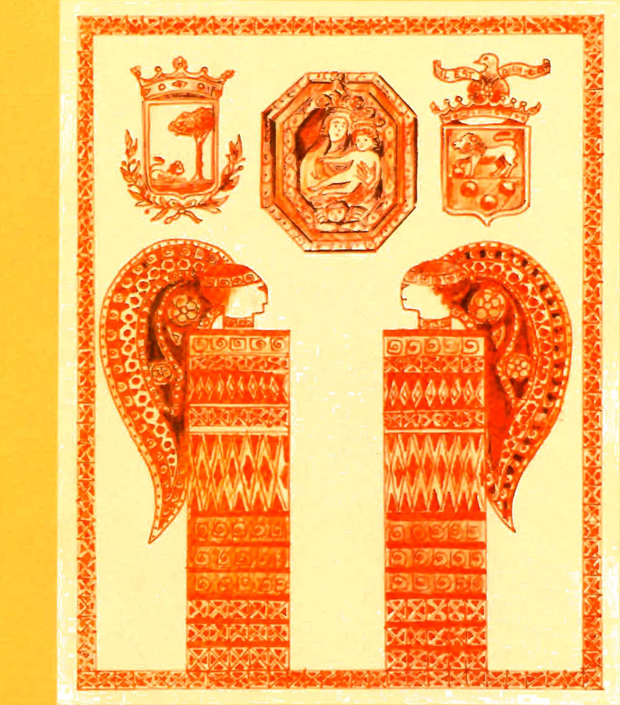
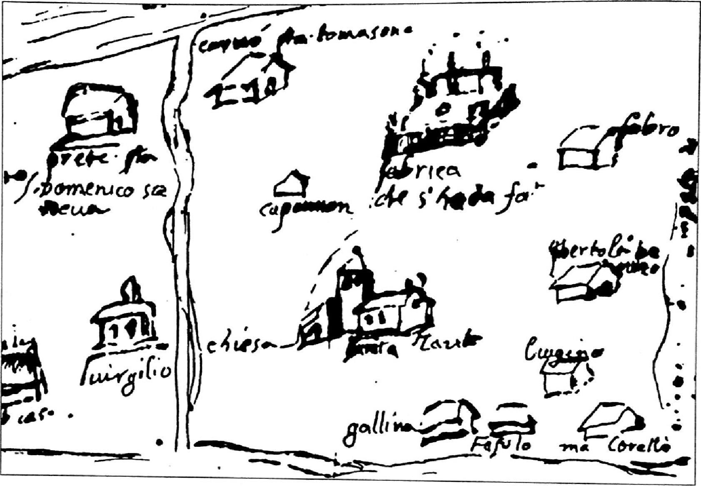
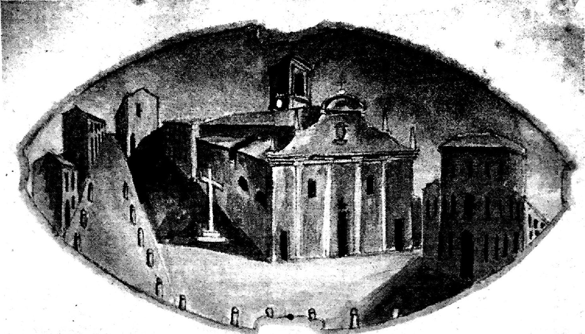
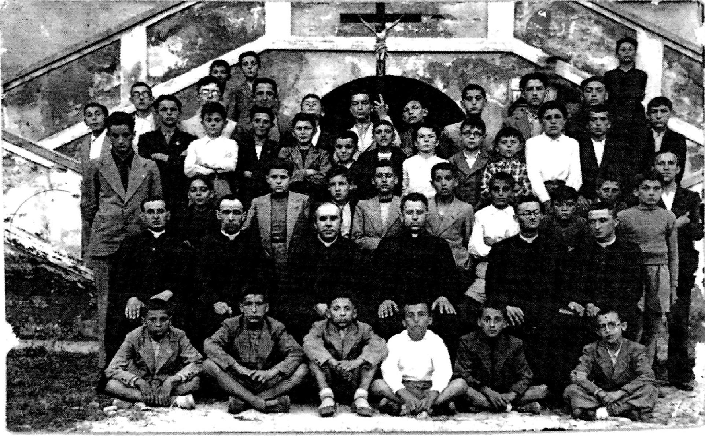
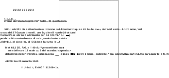
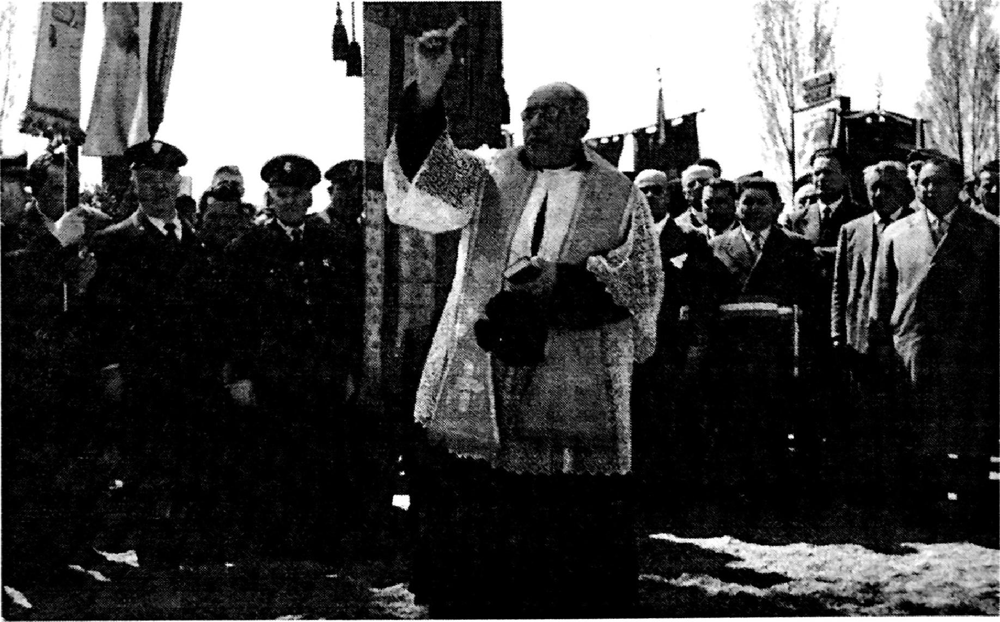
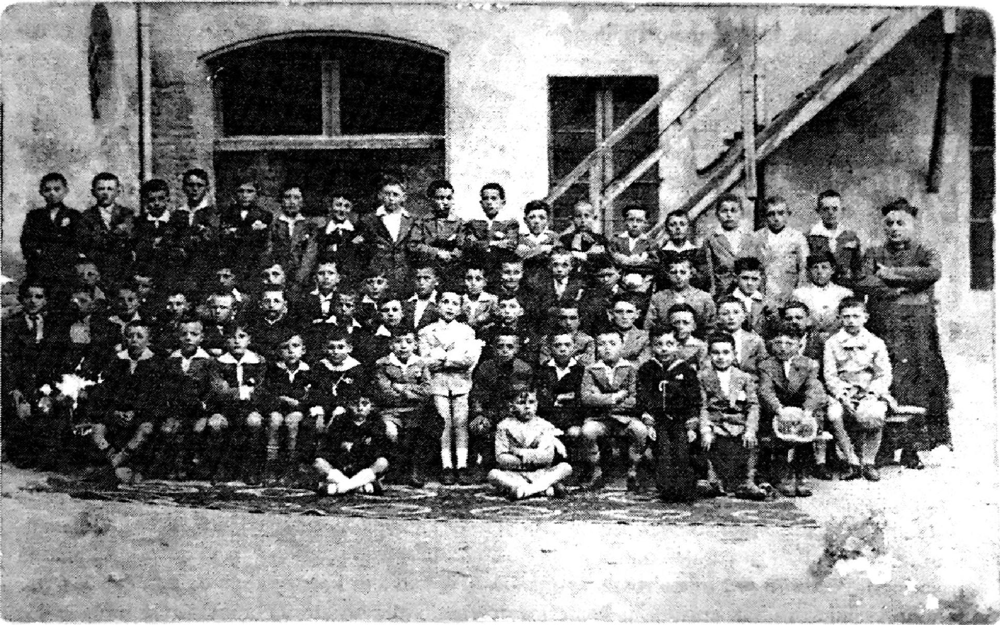
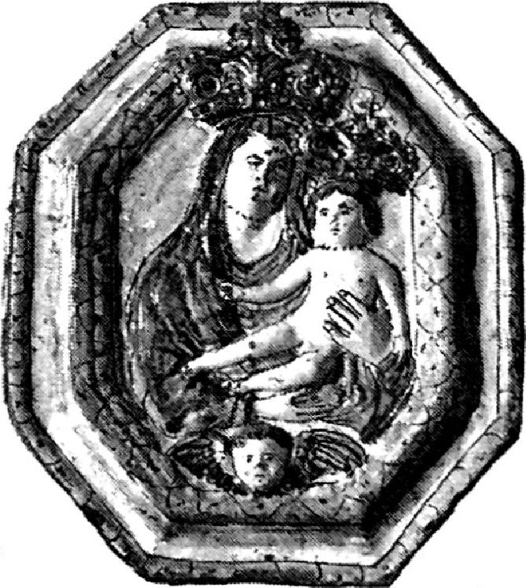
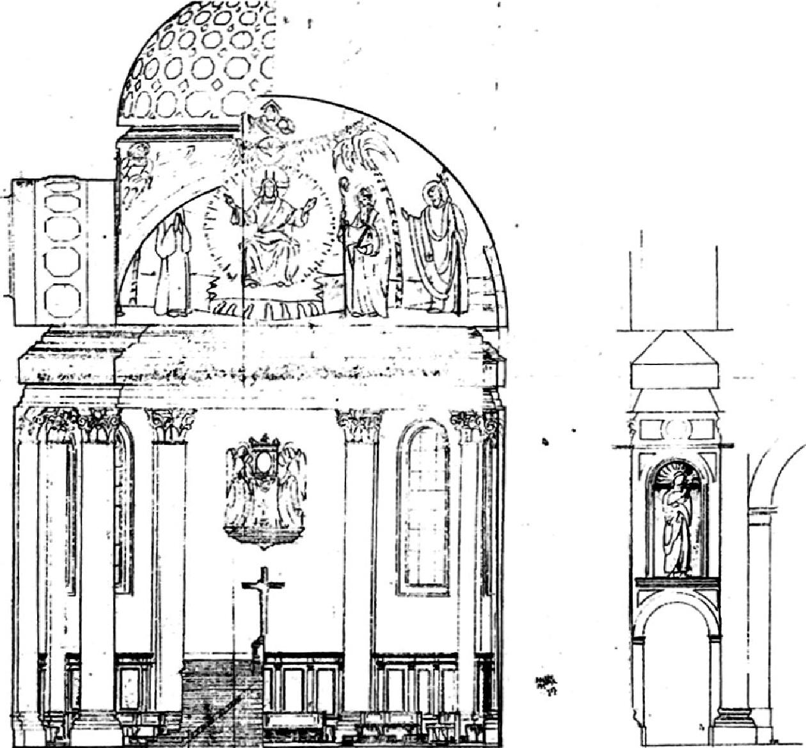

ma
che nella villa del Seminario
ma
che nella villa del Seminario500 ANNI DELLA CHIESA
DI S. MARIA DELLE GRAZIE IN ALFONSINE

QUADERNI ALFONSINESI
N. 16
500 ANNI DELLA CHIESA
DI S. MARIA DELLE GRAZIE IN ALFONSINE
QUADERNI ALFONSINESI
N. 16
In copertina: Acquarello originale eseguito dal Prof. Romeo Zanzi
INDICE
Angelo Antonellini Introduzione P. 5
Adis Pasi Prefazione p. 7
Cronotassi dei vescovi di Faenza p. 9
Cronotassi dei Rettori (Parroci), economi spirituali
e arcipreti di S. Maria delle Grazie in Alfonsine p. 10
Adis Pasi "Dove Romagna s'inabissa e perde" p. 13
Don Luigi Liverani Diario di guerra p. 21
Due vite umili - Il dotto Vescovo e il candido frate
Lorenzo Bedeschi Ricordo di Mons. Gardini vescovo di Bertinoro p. 39
Luciano De Nardis Nostra gente. Padre Alfonso da Alfonsine p. 41
Adis Pasi "... E io ti sparo contro un sonetto" p. 43
Giuseppe Bellosi Canti popolari religiosi in Romagna P. 64
Un numero "speciale" dei Quaderni che vuole celebrare i Cinquecento anni della Comunità delle Alfonsine.
Cinque secoli fa (1502) la posa della prima pietra per la costruzione di una Chiesa in località Destra Senio.
Gli storici hanno identificato questo momento con la nascita ufficiale della nostra città. Documenti rari, preziosi per la loro autenticità, di avvenimenti storici (Francesi in Romagna) e di testimonianze, sofferte e qualificate, come il Diario di guerra di don Liverani. Esperienze e testimonianze che fissano le immagini di un viaggio attraverso il tempo e ricordano vicende umane per dare una identità socio-culturale alla nostra comunità.
Una Chiesa che rappresentò il coagulo di un territorio abitato che stava sviluppandosi lungo il fiume Senio fra le acque malsane delle Valli, in situazioni ambientali difficili, condizionate da miseria ed epidemie devastanti.
L'Amministrazione Comunale è profondamente riconoscente al Prof. Adis Pasi ed ai suoi collaboratori per l'impegno profuso nella ricerca e per aver sapientemente definito i confini fra la documentazione storica e i "si dice".
Un lavoro serio e qualificato che ci offre la chiave di lettura delle nostre origini, radicate nelle fondamenta di quella Chiesa. Per capire meglio le tappe del nostro viaggio. Per definire meglio le immagini della nostra identità.
Angelo Antonellini Assessore alla Cultura
La quasi totalità dei documenti riportati in questo numero dei «Quaderni Alfonsinesi» proviene dall'Archivio della Chiesa Arcipretale di S. Maria delle Grazie.
Si rivolgono pertanto i più vivi ringraziamenti a don Mario Piazza e a padre Renato Frappi per la loro disponibilità.
Particolare gratitudine a due giovani appassionati di storia che ci piace citare affettuosamente solo per nome: don Michele, diacono, e don Tiziano, che ci sono stati prodighi di indicazioni preziose e con i quali abbiamo avuto proficui scambi di idee.
Rivolgiamo, infine, un caloroso e riconoscente saluto a don Mario, parroco della Chiesa di S. Maria per ventidue anni, la cui presenza discreta, ma ininterrotta e partecipe al nostro fianco in ogni momento della nostra vita, è sempre stata testimonianza di carità e di fedeltà alla "pietas".
Augurandogli di poter continuare con altrettanta efficacia la sua missione pastorale, facciamo nostre le nobili e sofferte parole che una signora gli ha rivolto alla fine della S. Messa di domenica 30 giugno: "Grazie per essere sempre stato al posto giusto nel momento giusto".

Pianta della zona alla destra del Senio dove sorge la Chiesa. Anno 1552.
Cronotassi
dei Vescovi di Faenza
dal 1478 ai giorni nostri*
55° Battista De Canonici bolognese 1478-1510
56° Giacomo Pasi laico faentino eletto dal papa 1510-1528
57° Pier Andrea Gambari canonista imolese + nel settembre 1528
58° card. Rodolfo Pio carpigiano 1528-1544 poi vescovo suburbicario e di Faenza
frno al 1562
59° Teodoro Pio, fratello del precedente 1544-1561
60° Giovanni Battista Sighicelli bolognese 1562-1575
61° Annibale Grassi bolognese 1575-1585
62° Giovanni Antonio Grassi nipote del precedente 1585- + 29 luglio 1602
63° card. Giovanni Francesco Sangiorgio di Casalmonferrato + 19 luglio 1605
64° card. Erminio Valenti di Trevi 1605-1618
65° fra Ilario Morani di S. Sofia vallombrosano 1618
66° card. Giulio Monterenzi bolognese 1618-1623
67° card. Marcantonio Gozzadini bolognese + I settembre 1623
68° card. Francesco Cenini senese 1623-1642?
69° card. Carlo Rossetti ferrarese 1643-1681
70° card. Antonio Pignatelli di Spinazzola (Basilicata) 1682-1686,
poi papa Innocenzo XII (1691-1700)
71° card. Giovanni Francesco Negroni genovese 1687-1697
72° card. Marcello Durazzo genovese 1697-1710
73° card. Giulio Piazza forlivese 1710-1726
74° fra Tommaso Cerioni eremitano agostiniano senese 1726-1729, poi trasferito a Lucca
75° Nicolò Maria Lomellino somasco genovese 1729-1742
76° Antonio Cantoni faentino 1742-1767, poi arcivescovo di Ravenna
77° Vitale Giuseppe de Buoi bolognese 1767-1787
78° Domenico Manciforte gesuita anconetano 1787-1805
79° Stefano Bonsignore oblato milanese 1807-1826
80° Giovanni Nicolò Tanari bolognese 1826-1832
81° Giovanni Benedetto Folicaldi di Bagnacavallo 1832-1867
82° fra Angelo Pianori minore osservante di Brisighella 1871-1884
83° Gioacchino Cantagalli faentino 1884-1912
84° Vincenzo Bacchi bolognese 1912-1924
85° Ruggero Bovelli tuderte 1924-1929
86° Antonio Scarante padovano 1930-1944
87° Giuseppe Battaglia bergamasco 1944-1970
88° Marino Bergonzini modenese 1970-1982
89° Francesco Tarcisio Bertozzi cesenate 1982-1996
90° Italo Castellani 1997-...
Cronotassi dei Rettori
(Parroci), economi spirituali
e arcipreti di S. Maria delle Grazie
in Alfonsine.
(Da Un paese, la sua chiesa, Alfonsine, 2000, p. 4, parzialmente modificato).* * a cura di Romano Pasi
Celio Calcagnini, circa 1540 (v. A. Pasi, Celio Calcagnini (1479-1541), «Quaderni Alfonsinesi», n. 2 (Feb. 1979).
Don Matteo Orsini, 1606
don Marco Lega, 1606-1717
don Giulio Tamburini, 1617, economo
don Bemandino Randi, 1617-1621
don Giulio Tamburini dei Graziani, 1621-1627
don Giovanni Francesco Checcoli, 1628-1646
don Francesco Bettini, 1646-1654 forlivese
don Domenico Gattini, 1654-1679
don Antonio Dragoni, 1680 economo
don Francesco Maccagni,
don Agostino Tosini, 1728-1744 ravennate
don Paolo Guerrini, 1744-1758 fusignanese
don Francesco Alessandrini, 1758 economo
don Carlo Finotti, 1758-1811 ferrarese, visse anni 91
don Domenico Maria Ferri, 1811 economo
don Damiano Battaglia, 1812-1854 (nel 1842 emiplegia) nato a Masiera
don Bonafede Ferri, 1842-1854
don Carlo Farolfi, 1855-1856 economo
don Geremia Corelli Grappadelli, 1856-1863 economo
don Leopoldo Santoni, 1863-1866 economo
don Giuseppe Massaroli, 1866-1868 economo
don Luigi Marini, 1868-1879 economo
don Stefano Brunetti, 1879-1881 economo
don Gian Battista Ricci Bitti, 1881-1893 unico rettore sepolto ad Alfonsine
don Paolo Scioni, 1893 economo
don Antonio Costa, 1893-1907
don Stefano Brunetti, 1907 economo
don Natale Valenti, 1908 economo
don Luigi Bacchilega, 1909 economo
don Luigi Tellarini, 1909-1922
don Antonio Tamburini, 1922 economo
Mons. Francesco Gardini, 1922-1931 rettore e poi vescovo di Bertinoro
don Giovanni Bianchedi Pro rettore ed economo nel 1931-32
don Luigi Liverani, 1932-1956 arciprete
don Carlo Marcucci, 1956-1980 arciprete
don Mario Piazza, 1980-2002 arciprete
don Renato Frappi 2002-...
Alcune fonti
"... ed il predetto Alfonso Conte di Lui (Teofilo) Figlio, continuando l'impresa Paterna aveva ridotta massima parte parte d'esse valli escluse le acque con sua industria, e dispendio di scudi diecimille circa coltivabile e fertile, ed edificata una Chiesa in tali Fondi ad onore della gloriosa Vergine Madre di Dio, e formate più Case per abitazione degl'Agricoltori in tali possedimenti chiamando tali Luoghi dal suo nome Alfonsine...".
(Dal Breve di Leone X del 4 dicembre 1519).
"Si dié poscia a non poche edifrcazioni di case, riempiendo d'abitatori i luoghi vuoti, ed ultimamente eresse una chiesuola a Nostra Donna onde fosse costituita parrocchia a spirituale vantaggio de' nativi assai a que' giorni da altre chiese lontani".
"... e all'avvenire volle le terre per lui siffattamente migliorate dal Suo nome si chiamassero ALFONSINE, col quale nome tosto nella topografia della provincia ferrarese si collocavano". (G. Rambelli, Memorie storiche dell'Alfonsine, Galeati, Imola, 1833)
Alfonso Calcagnini "proseguendo l'opera del padre aveva fatto con ingenti spese e con industria, grandi bonificazioni delle valli donate nel 1465 (in effetti 1464, n. d. r.) alla famiglia. Vi aveva edifrcato molte case, e nel 1502 anche anche la chiesa dedicata alla Vergine in luogo, ove non vi era popolazione, cosicché dal suo nome, avendo a que' luoghi colla sua industria recato molto vantaggio, si chiamavano le Terre Alfonsine.
(Tavola genealogica N. 1 della Famiglia Calcagnini stampata nel 1848).
"Per comodo delle persone che lavoravano in gran numero a questo prosciugamento, i Signori Calcagnini, poiché si vedevano ormai padroni di un estesimmo territorio che prima era tutto coperto dalle acque, vollero edificarvi una Chiesa la quale fu detta Santa Maria delle Alfonsine"
(G. Fignagnani, La Storia di Fusignano, Prato, 1879)
"Dal 1502 le bonifiche delle Alfonsine erano già avanzate a modo, che i coltivatori avevano preso ad abitar la' stabilmente, e Alfonso a provvedere anche ai loro bisogni religiosi, edifrcò sul luogo la prima chiesa, che S. Maria delle Alfonsine fu detta; e bastò per una quarantina d'anni. Ma continuando sempre i Calcagnini nel grande lavoro, nulla ostante che giorni men lieti anche per loro sorgessero, poi e di Alfonsine aumentando la popolazione, anche la chiesa nel 1540, come a suo luogo diremo, fu d'uopo ricostruire".
(L. Balduzzi, I Calcagnini, memorie genealogiche, Pisa, 1884).
"Alfonso Calcagnini, il quale aveva un feudo a Fusignano protrasse... l'interramento di val Nagajoni e di altre valli limitrofe, che assorbi gran parte delle sue forze finanziarie, ma anche fruttò alla sua famiglia l'acquisizione di un grande tenimento coltivanile.
In questa zona prosciugata, che da lui si chiamò "Alfonsine", egli mandò numerose famiglie di Fusignano e l'anno 1502 vi fu innalzata una chiesa presso la quale sul fiume Senio (in punto in cui si trovava un passo barca) si creò villaggetto.
Quello che era è diventato Alfonsine".
(G. Gambi, L'insediamento umano nella regione della Bonifica Romagnola, CNR, 1949).

Acquarello su carta della Chiesa di S. Maria (cm.25 x 31). Il campanile è stato costruito nel 1752.
Adis Pasi
"Dove Romagna s'inabissa e perde"
"Nel 1540 poi i Conti
Alfonso e Teofrlo Calcagnini investiti del giuspatronato di essa
chiesa,
secondo il Breve di Leone... innalzarono dalle fondamenta
una chiesa meno augusta sulla
quale posero in marmo la seguente
epigrafe:
ALPHONSUS ET THEOPHILUS
CAL
CAGNINI FRATRES COMITES ET
DOMINI TERRITORII
LEONINI
TEMPLUM B VIRGINIS DE JURE
PATRONATUS SUAE FAMILIAE
A
FUNDAMENTIS EREXERUNT
ANNO MDXL (1)
Dal Breve di Leone X:"
. . . ed accordando a Borso, e Tommaso, e figli discendenti da esso Tommaso il gius patronato, e facoltà di presentare all'Ordinario del Luogo i Rettori, e Cappellani alle vacanze, e ciò perpetuamente senza che possa venire apposto vizio di surrezione, o regime, nullità o invalidità benché impensata ne essere le presenti impugnabili in verun modo o diretto, o indiretto, ma che le presenti Lettere debbano sortire effetto di valido contratto fra noi, e i nostri successori...".
La defrnizione di giuspatronato è la seguente: "Ius honorifrcum, onerosum, et utile alicui competens in ecclesia pro eo, quod de Diocesani consensu ecclesiam fundavit, construxit vel donavit ipse, vel is, a quo causam habuit, solus vel alio concurrente".
(Diritto onorifico, oneroso e utile spettante a qualcuno su una chiesa per il fatto che, dietro consenso dell'Ordinario diocesano, ha fondato, costruito o donato una chiesa egli stesso, o colui dal quale ebbe pieno diritto da solo o insieme con un altro).
"Oltre alla scelta del rettore, ai patroni ... spettavano altri diritti: quello più onorifrco di uno stallo riservato ed in rilievo nella chiesa del proprio patronato, quello più oneroso della conservazione e manutenzione decorosa della fabbrica e dei beni patrimoniali del beneficio, quello più utile dell'esazione annua in caso di indigenza. Anche se difficilmente valutabile in termini economici, non va trascurata la rilevanza sociale dello ius onorifrco: tanto in un paesino di campagna, quanto in un popoloso quartiere di una ricca città il godere di un luogo separato in chiesa era il segno visibile ed appariscente di un prestigio frutto di una remota origine, o di una sicura consistente ricchezza patrimoniale" (2).
Oltre al giuspatronato perpetuo sulla chiesa, Leone X conferì a Borso e a Tommaso la baronia del Leonino.
Ila 15 luglio 1605, Paolo V eresse Fusignano in marchesato e confermò a Guido, figlio di Teofilo II e di Ginevra Rondinelli, tutti i privilegi ed esenzioni concessi da Clemente VII, quando, nel 1598, Ferrara era tornata sotto il dominio diretto della Chiesa. È appena il caso di ricordare che in quell'occasione i Calcagnini furono privati del mero e misto imperio di cui avevano goduto fino a quel momento. Da Alfonso II, figlio di Tommaso e di Maria dì Noyant, nacquero Ercole e Tommaso IL Nelle divisioni di famiglia a Tommaso andò il marchesato di Cavriago.
Fu suo nipote Mario ad ottenere il marchesato di Formigine in cambio di Cavriago (3 ottobre
1648). Si ricordi che Mario Calcagnini, nel 1634, aveva venduto al cugino Borsa la parte che gli spettava in Fusignano e che il contratto fu convalidato nel 1679. Il ramo fusignanese si
estinse nel 1814. I suoi ultimi rappresentanti meriterebbero uno studio approfondito. Francesco morì senza eredi maschi; il fratello Tommaso, morto a Parma nel 1814, appoggiò i progetti di riforma di Guillaume du Tillot, ministro delle finanze di Filippo di Borbone, nel ducato di Parma. Il fallimento di quei progetti spinse anche Tommaso Calcagnini a ritirarsi della vita politica.
L'altro fratello, Guido (1725-1808), fu nominato prima cardinale nel 1775, poi, l'anno seguente, Vescovo di Osimo e Cingoli da Pio VI (Braschi). Un dotto amico, docente universitario, mi ha segnalato sue interessanti prese di posizione sui governi napoleonici in Italia. E' sepolto nella cattedrale di Osimo.
Del ramo di Formigine fu illustre rappresentante Carlo Leopoldo (1678-1746), creato cardinale nel 1743 da Benedetto XIV (Lambertini) col titolo di S. Maria in Aracoeli, di cui è rimasta fama di uomo integerrimo e fine giureconsulto. E' sepolto a Roma in S. Andrea delle Fratte. Fratello del Cardinale Carlo Leopoldo fu Ercole, morto nel 1738, padre di Teofilo.
Teofilò sposò Laura d'Adda dalla quale ebbe quattro frglie e un frglio. Come risulta dai registri della Parrocchia di S. Domenico in Bologna, mori in quella città (repentine obiit) il 3 aprile 1797. Teofilo aveva le proprietà l'eredità di Francesco, del ramo fusignanese, e queste passarono all'unico figlio maschio, Ercole (1756-1817). È Ercole, infatti, che il 29 aprile del 1809 presenta la denuncia dei beni posseduti in Alfonsine assieme alla documentazione che lo dimostra unico erede del padre. Una delle sorelle di Ercole, Maria (1754-1846), andata sposa al marchese Carlo Zavaglia di Ferrara, fu colta e stimata amica di Giuseppe Compagnoni, che la fece destinataria di molte lettere, alcune delle quali sono state pubblicate in anni recenti (3). Nel corso dell'Ottocento i Calcagnini avevano abbandonato la cura e la manutenzione della chiesa e avevano perfino ceduto in alienazione perpetua il "gius sedendi" a Giuseppe Lanconelli. In pieno clima di polemiche intorno all'erezione del palazzo comunale veniva usato, non so quanto strumentalmente, anche lo stato della chiesa che "è piccola, cadente, ed anche indecente, per la quale e ormai tempo che i fedeli invece d'impiegare somme in opere di lusso, cerchino di erigere un Tempio al nostro Dio ..." (4). È pur vero che i Calcagnini dichiararono la loro disponibilità a partecipare alle spese per i restauri, ma non sappiamo se da essi sia venuto un contributo per la costruzione, iniziata nel 1868, del nuovo edifrcio sacro (5). In proposito don Luigi Ruffini ci offre una informazione preziosa. La chiesa fu, in un primo momento, " terminata solo all'esterno, grezza all'interno. Poi per mancanza di fondi, sosta ancora di economia finché il Governo ordinò la chiusura della vecchia chiesa, perché minacciante disgrazia. Fu allora necessario fare un secondo appalto, ... di abbattere la chiesa vecchia, fare la sacrestia ...". I lunghi periodi di economato, rilevabili nella cronotassi dei rettori, sono giustificati dalla necessità di reperire risorse per il prosieguo dei lavori nella nuova fabbrica, cui il comune contribuì con duemila lire annue.
Rimase comunque ai Calcagnini il diritto di nomina dei rettori. Mons. Mariano Faccani, cancelliere vescovile, scrive: "Dalle carte di archivio si evince molto bene che la crisi dei Calcagnini aveva portato al completo abbandono del dovere di mantenere il culto nella parrocchia di Alfonsine, così il Vescovo Vincenzo Bacchi in pratica decretò nel 1922 la fine del Patronato, con il "monitum" cioè una citazione in forma edittale" (6). Il "Monitum", emanato il 4 luglio 1922 e dal quale traduco, come posso, alcuni passi, suona così:
"Essendo vacante la Chiesa rettorale di S. Maria delle Alfonsine di questa diocesi innanzi a Noi il giorno 28 scorso comparve il Conte Carlo Gentili frorentino nella sua qualità di Procuratore dell'Eccellentissimo Sig. Marchese Guido Calcagnini come risultò dal mandato di procura rogato il 28 scorso, e asserente che, sulla base della legge di fondazione e dotazione di detta Chiesa rettorale" nonché per le ininterrotte nomine "spettava e apparteneva al medesimo signor Marchese Guido Calcagnini il diritto di eleggere, proporre e presentare il Rettore
per essa (chiesa) ogni qualvolta si presentasse una situazione di vacanza", perciò ha scelto, proposto e presentato alla carica di Rettore il Reverendissimo Don Francesco Gardini, sacerdote della Diocesi di Bologna, essendo stato chiamato l'ultimo rettore, Don Luigi Tellarini, a reggere la Chiesa Parrocchiale di S. Severo di Faenza. Il Vescovo ammette che il Gardini venga nominato nuovo Rettore, ma a tempo e luogo debiti (suis loco et tempore), perché nel frattempo intende procedere in forma edittale per dare modo a tutti coloro che avessero diritti da accampare sul rettorato della chiesa alfonsinese di poterlo fare; per questo concedeva nove giorni di tempo. Il Vescovo avrebbe vagliato la legittimità (causam rationabilem) di altri eventuali titoli.
In buona sostanza il Vescovo faceva intendere che, pur rispettando lo "ius eligendi" dei Calcagnini, riservava a se stesso il diritto di prendere in considerazione altre candidature e quindi di scegliere chi più ritenesse adatto all'incarico.
E poco importa che poi nominasse rettore mons. Francesco Gardini.
Si dovrebbe verifrcare presso l'Archivio Vescovile se e quando ci fu una rinuncia formale del giuspatronato da parte dei Calcagnini. Sta di fatto che il 6 aprile 1932 il cancelliere vescovile comunica a don Luigi Liverani la nomina a Rettore della chiesa arcipretale di Alfonsine e che il 26 aprile Mons. Antonio Scarante gli conferisce il titolo di Arciprete. Fu probabilmente con questa elevazione della chiesa rettorale a chiesa arcipretale che si superò per sempre il giuspatronato e che si confermò sull'argomento, un comportamento uniforme tra Mons. Bacchi e Mons. Scarante.
Appendice
Ristabilimento del Vicariato Foraneo.
Lettera di Mons. Vincenzo Bacchi, vescovo di Faenza, a Mons. Francesco Gardini rettore di S. Maria delle Grazie.
Mons. Rev. Mo
Le accoglienze affettuosamente festose che Ella ha ricevuto costi, e gl'inizi felici del suo ministero, dei quali ci è pervenuta notizia, hanno persuaso Noi a ristabilire* codesto territorio di Alfonsine in Vicariato foraneo.
Alla Nostra persuasione e poi al Nostro desiderio è venuto incontro con spontaneità cordiale il Rev.mo Mons. Albertini Arciprete di Fusignano, pregandoci di separare Alfonsine da quel Vicariato.
Perciò, con questa Nostra lettera, siamo lieti di nominare Lei in Nostro Vicario foraneo pel territorio di Alfonsine, che togliamo dalla giurisdizione vicariale di Fusignano; e ciò conferendo a Lei, insieme con la nomina, tutte le facoltà necessarie ed opportune.
Nutriamo piena fiducia che il Signore prosperi l'opera di Lei in codesta plaga della diocesi remota dalla residenza Nostra; e augurandoLe da Dio ogni bene, Ci proferiamo.
Suo aff.mo
Faenza 27 settembre 1922 + Vincenzo vescovo
Il Rambelli, parlando di don Damiano Battaglia, lo indica come Rettore e Vicario Foraneo. Non sappiamo quando la Chiesa di Alfonsine fu privata del Vrcariato e annessa a quello di Fusignano. È presumibile che tale trasferimento sia avvenuto nel periodo compreso fra il 1854 e il 1881 quando, cioè, la parrocchia fu retta successivamente da ben sette economi. (Si vedano la cronotassi dei Rettori e le Memorie storiche dell'Alfonsine di G. Rambelli, Imola, 1833, p. 44). Stralcio della lettera inviata il 6 aprile 1932 dal Cancelliere vescovile, Can. Antonio Gandini, a Don Luigi Liverani, "Rettore eletto di S. Maria delle Alfonsine".
Molto rev.do Signore,
ò il piacere di comunicare alla S. V. molto rev.da che con Bolla Pontifrcia in data I marzo 1932, Ella è stata nominata Rettore della Chiesa Arcipretale di S. Maria in Alfonsine in questa Diocesi di Faenza.
Conferimento del titolo di Arciprete a Don Luigi Liverani
Lettera di Mons. Antonio Scarante, vescovo di Faenza, al "Sig. Dott. Don Luigi Liverani Rettore-Arciprete di Alfonsine"
Molto Reverendo Signore,
siamo informati che tra giorni seguirà il suo solenne ingresso nella parrocchia delle Alfonsine quale novello Rettore e Nostro Vicario Foraneo.
In tale occasione per attestarLe con qualche segno la Nostra stima e benevolenza ed anche per chic, che per estensione e popolazione è tra le più importanti della Nostra Diocesi, abbiamo deliberato di conferirLe, come Le conferiamo con la presente, il titolo onorifico di Arciprete. Nella fiducia che codesta nomina sarà di gradimento a quella buona popolazione, e a Lei di stimolo a compiere coscienziosamente e con zelante attività le mansioni parrocchiali affidateLe, Le auguriamo un ministero fecondo di pastorali consolazioni e paternamente La benediciamo.
+ Antonio Vescovo
Faenza 26 aprile 1932
" La chiesa eretta da Alfonso e Teofrlo Calcagnini consisteva nella sola navata di mezzo della parrocchiale odierna, divenuta anche questa augusta le furono unite le navate laterali, e dal rettore Paolo Guerrini circa il 1752 fu aggiunto il campanile sul quale a pubbliche spese nell'ottobre 1825 si collocarono armoniche e lodate campane fuse dal prof. Rasori bolognese" (G. Rambelli, Memorie storiche cit., p. 48)
Inventario della Chiesa
Parrocchiale di S. Maria dell'Alfonsine
"firmato in occasione
della Sagra Visita dell'Anno 1818"
La Chiesa di S. Maria di Alfonsine, è di tre Navate, con sei altari.
Altare Maggiore
Scalinata, e Mensa di Pietra con tre gradini superiori di legno verniciati, e rabescati a finto oro con Tabernacolo simile vecchio sua predella, e due Conopei (drappo del colore liturgico del tempo che serve a velare il tabernacolo).
Sedici candelieri di Legno a finto oro: sei vasi da fiori simili: quattro Candellieri piccoli di
ottone.
Tre Tavolette, un Legilio, un Campanello.
Un trono per l'opposizione del SS. Sagramento a rabeschi dorati.
Due lampade d'ottone appese a due bracci di ferro.
Due quadri appesi lateralmente al Presbiterio rappresentanti uno S. Anna, e l'altro S. Giuseppe.
Sopra il coro un Nicchio, entro cui havvi l'Imagine di terra della B. V. delle Grazie.
Altare del SS. Rosario
Mensa di pietra con due gradini, e Pradella. Altare di stucco con quindici Misteri del SS. Rosario: Quadro della B.V. del Rosario, S. Domenico, S. Francesco: al di dietro il Nicchio colla statua della B.V. del Rosario vestita con abito di seta scuro.
Quattro Candellieri d'ottone e Croce compagne.
Sei candellieri di Legno, con Tavolette da Messa, Legilio, e campanello.
Altare del SS. Crocefisso
Altare di pietra, Mensa di legno, e Pradella.
Due Candellieri di ottone, e Croce compagni: due Lampade d'ottone appeso a due bracci di
ferro: sei Candelieri di Legno con croce.
Tre tavolette, con Legilio, e campanello.
La Statua della B.V. Addolorata: la Statua di S. Giovanni Evangelista.
Una tendina che copre suddette statue.
Altare del Purgatorio
Altare di Pietra, e predella con Quadro, che rappresenta le Anime del Purgatorio, Immagini di
S. Antonio Abate; S. Agostino; B.V. della Cintura.
Quattro candelieri di legno, Croce, e Tavolette da Messa, Legilio, e campanello.
Due Lampade d'ottone appese a bracci di ferro.
Altare di S. Antonio di Padova
Altare di Pietra con Pradella. Quadro rappresentante S. Antonio; di dietro Nicchio con la Statua di detto S. vestita di nero con il S. Bambino. Sei candelieri di legno, e tavolette da Messa con Legilio, e campanello.
Due candelieri piccoli d'ottone. Due lampade d'ottone appese a bracci di ferro.
Altare di S. Luigi
Altare di Pietra con sua Pradella, con quadro rappresentante S. Luigi: al di dietro Nicchio colla statua di d.° Santo, vestito di nero con cotta, Crocefrsso. Sulli gradini il quadro del Sacro Cuor di Gesù con sua cornice velata ad oro, con quattro candelieri simili, due Reliquiarj, e tre tavolette con Leggilio vernicciato, e croce piccola posta sopra il quadro.
Il piedestallo di legno compagno del quadro con due bracci d'ottone.
Una lampada d'ottone appesa al braccio di ferro e campanello.
Fonte battesimale
Una Caldara di Rame per conservare l'acqua.
Due vasetti d'argento per il S. Crisma, e da Catecumini entro ad una scatola di legno.
Due piccole boccette di vetro per i SS. Ogli.
Un Cucchiaro d'ottone, e Cattino di terra per battezzare.
Canapo di stoffa. Rastello di legno chiuso a chiave.
Nella Sagrestia
(Indichiamo solo alcune voci)
La Statua del Bambin Gesù.
Tre Confaloni bianchi di Damasco guarniti di giallo con le Immagini del SS. Sagramento, del
SS. Rosario, e S. Antonio con loro croci ed aste. (Si tratta evidentemente dei Gonfaloni delle
Confraternite).
Un urna di legno per il S. Sepolcro dipinto a finto marmo.
Alla Chiesa di S. Maria di Alfonsine resta unita la Canonica.
Nel piano Inferiore avvi l'Entrata, con quattro Camere, una delle quali serve per la Sagristia. Per mezzo di una scala di pietra a due rami si ascende al secondo piano composto di una sala, e quattro camere per ogni lato.
Il piano superiore, a cui si ascende per una scala di legno a due rami, serve per il Granaro. Nel cortile della Canonica vi sono i bassi comodi cioè Stalla, Bugadera, Loggia per la legna, Cantina, Forno, e Pozzo.
La Chiesa Parrocchiale di S. Maria dell'Alfonsine possiede i seguenti stabili e diritti. (Anche in questo caso citiamo due sole voci che ci paiono di particolare interesse).
Una piccola Casa sul Piazzale della Chiesa dalla quale si ricava la pigione di scudi otto. (A margine del foglio è stata scritta la seguente nota: "questa casa venna demolita ad istanza del Comune locale nel 1845, ed in compenso si paga annualmente alla Chiesa dal Comune istesso la somma di scudi dieci).
La Chiesa Par.le di S. Maria gode il diritto di Primazia in Grano, che si deve pagare da tutti quelli, che entro i confrni della D.a ne seminano; e si raccolgono cirsa cento Corbe. Valutato un anno per l'altro a scudi 1:60 la corba, ne risulta l'entrata di scudi centosessanta.
Gode inoltre del diritto così detto del Carlino. Questa tassa consiste nel pagamento di baj. Cinque per quelle Famiglie che non pagano Primizia. Potendosi riscuotere ascenderebbe a venti o venticinque scudi all'anno; ma trattandosi di famiglie quasi tutte povere, o miserabili, oggi si riduce a zero.
Note
G. Rambelli, Memorie storiche dell'Alfonsine, Imola, 1833, pp. 44-48.
G. Greco, I giuspatronati locali nell'età moderna in Storia d'Italia, Annali 9, Torino, Einaudi, 1986, pp. 538-539.
G. Compagnoni, Lettere varie (1776-1832), a cura di Marcello Savini, Ravenna, Longo, 2001, pp. 202, 209, 210, 211, 213.
G. Compagnoni, Cinquantotto lettere e una supplica, a cura di Marcello Savini, Ravenna, Longo, 1996, pp. 132-139.
Nella godibilissima lettera inviata dal Compagnoni alla Zavaglia il 20 settembre 1833 (si ricordi che egli morirà il 29 dicembre seguente) si informa la "vedovella che ha toccate tre parti di un secolo senza fare il minimo male ad alcuno, e a molti facendo del bene" di una proposta ricevuta.
Il Compagnoni racconta all'amica come il Petrucci volesse pubblicare "in litografia xxx ritratti di altrettanti Ferraresi illustri" e intendesse "mettere anche voi tra questi, quantunque siate nato in Lugo, e non in Ferrara,
e ciò per la ragione che metto tra' Ferraresi il Monti, nato in Fusignano. E qui per parentesi la integrità della
storia vuole che vi sia noto, se mai noi sapeste, che un valentissimo biografo, non so per rilevare le glorie del Monti, o le Sue proprie, dopo molte e penose ricerche ha potuto stampare che il Monti non nacque nemme
no in Fusignano, ma bensì nel villaggio delle Alfonsine, superba tenuta della vostra famiglia, posta, direbbe Bettinelli, dove Romagna s'inabissa e perde". (Il corsivo è nostro). E più avanti non risparmia critiche al poeta che "per molti ha finito come un poeta mediocre: critica acerba, e che il tempo solo può rattemperare". Non è certo questo il luogo adatto per tornare a discutere sul valore della poesia del Monti, soprattutto dopo aver letto con grande attenzione gli studi di Barbarisi, Mari, Tanda, Frassineti, Dardi, Bruni e tanti altri, di alcuni dei quali, meritoriamente, il Comitato Montiano si è fatto promotore.
Né è il caso di tornare "sulla origine e sviluppi" della polemica Compagnoni-Monti.
Mi piace, però, segnalare un'interessante considerazione di quel grande, preciso e garbato studioso che fu Luigi Dal Pane. Pur cadendo anch'egli in alcuni stereotipi che dal De Sanctis in poi si sono andati ripetendo, coglie lo spirito dell'epoca del Monti con rara efficacia.
Negli «Studi Romagnoli» 3 (1952), Faenza, 1953, pp. 361-398, è possibile leggere una relazione di Dal Pane, Spunti per la storia sociale settecentesca, in cui si commentano diciassette lettere inviate dal Monti a monsi
gnor Alessandro Alessandretti, vescovo di Zama e vicario apostolico di Comacchio dal 1787 al 1797. Le lettere non hanno un grande valore documentario, ma assai interessanti mi paiono sia la profonda conoscenza che dell'Epistolario mondano ha Dal Pane, sia le considerazioni critiche che scaturiscono dal loro esame.
"I13 marzo 1797 il poeta lasciava Roma con la carrozza dell'aiutante di Bonaparte, il Marmont. Appena libero sfogò il suo risentimento per le ambascie patite nella poesia 11 Fanatismo (1797), espressione sincerissima
del suo sdegno anche se caricata di forti tinte allo scopo di far ammenda della Bassvilliana. La conversione del Monti ha fatto sì che i posteri abbiano preteso troppo da lui. Figlio di un'epoca in cui in teoria si condannavano molte concezioni del passato, ma in pratica ci si adattava ad esse senza credervi, poeta di corte, che aveva creato la sua fortuna celebrando in versi gli avvenimenti del giorno e i fasti di personalità eminenti,
infervorandosi alle sensazioni più disparate, egli doveva rimanere anche dopo un poeta d'occasione, che piega alla volontà dei soggetti l'entusiasmo mobile di un animo senza forti passioni, uso a trovare nella bellezza della forma l'intimo appagamento. E' accusato d'aver mutato sovente atteggiamento: ma l'accusa si ritorce contro la società che cosi lo formò, una società che non garantiva all'intelligenza regolari carriere, ma che dispensava i posti in ragione del denaro, del privilegio, dell'adulazione e delle arti più vili". (Il corsivo è nostro).
A. fasi, Quando Dio abitava alla destra del Senio, «Quaderni Alfonsinesi» n. 13, (dic. 1990).
Lettera di don Luigi Ruffini in Un paese, la sua chiesa, Alfonsine, 2000, p. 9.
11 "fenomeno" del feudo Calcagnini e la "libertas ecclesiae" in Un paese, la sua chiesa cit., p. 19.
"... nessuna città è felice, e nessun uomo, se non vivono secondo saggezza ispirata da giustizia, si a che le abbiano in sé come virtù, sia che le abbiano apprese
attraverso la giusta educazione ricevuta da uomini retti".
(Platone, Lettera Settima, 335 d)
Don Luigi Liverani
Diario
di guerra
Un tentativo di introduzione.
Non avrei voluto scrivere questa, sia pur breve, premessa per moltissimi motivi. Soprattutto sento la mancanza di una biografia ragionata di don Liverani attraverso la quale comprendere le ragioni per cui assunse le posizioni che assunse. Un serio programma per un'indagine dovrebbe, almeno così pare a me, partire dall'ambiente faentino in cui crebbe, dai maestri che lo guidarono negli anni del seminario, dagli eventuali contatti stabiliti a Roma, dove conseguì il dottorato in Teologia. L'avere ascoltato più volte l'Arcivescovo Baldassarri e mons. Lucchesi, l'avere letto di mons. Lanzoni e di mons. Rossini ha prodotto in me la convinzione che tutti questi personaggi risentissero di un clima culturale in cui si imponeva un'esigenza di grande rigore negli studi che inevitabilmente li spingeva ad analizzare criticamente anche le vicende del loro tempo e a viverle da protagonisti, svolgendo la loro missione sacerdotale ("omnibus ungulis, collatis viribus") alla luce di una catechesi al passo coi tempi e consapevolmente aperta al futuro. Per questo non mancò la loro attenzione al sociale, che ebbe nel conte Carlo Zucchini (1862-1928) uno dei maggiori protagonisti, alla lotta politica, che portò una coalizione liberal-cattolica, capeggiata dall'avv. Gallo Marcucci, alla conquista del Comune di Faenza. Ma soprattutto intensa fu la loro azione nell'ambito della Gioventù Cattolica Italiana, fondata a Faenza nel 1891.
Scriveva mons. Lanzoni: "Io immaginavo e vagheggiavo l'Azione Cattolica come un'accolta, meglio un esercito di ecclesiastici e laici ben organizzati, diffuso in tutte le diocesi d'Italia, nessuna eccettuata, fornito di tutti i mezzi consentiti dalle leggi vigenti e suggeriti dalla cultura e dalla tecnica moderna; provvisto di giornali politici quotidiani da competere con qualunque altro, di riviste religiose, letterarie e scientifiche per le classi colte e fogli e foglietti per il popolo, con propri luoghi di convegno, adunanze di cultura e di propaganda, gite di divertimento e pellegrinaggi di divozione, casse rurali, banche di credito, società economiche di ogni genere e professionali; un esercito scelto di militi pronti a tutto (in estremi mali estremi rimedi), che si proponeva di muovere e infervorare i cattolici, e premere sui pubblici poteri, col massimo lealismo, per ottenere tutte le libertà d'indole religiose che ci competono e che ci erano state tolte".
E parlando ancora dei compiti delle Associazioni Cattoliche precisava: "Ho detto esporre e difendere le dottrina della Chiesa, s'intende integralmente, e senza sottintesi e silenzi calcolati, senza menomazioni, transizioni e compromessi di alcuna sorta, nella speranza (certamente vana) di rendere più accettabili gli insegnamenti della Chiesa agli increduli e pencolanti tra la Fede e il dubbio. Ma ero ben convinto si dovesse distinguere accuratamente negli insegna
menti della Chiesa ciò che è dogmatico, certo, probabile, controverso da ciò che non è, e non accondiscendere ad esagerazioni e confusioni assai nocive".
Si sente, dietro queste parole, il grande storico delle Diocesi d'Italia, della Controriforma a Faenza e nella diocesi. Quando il campanone dell'orologio di Faenza, nell'ottobre del 1928, "annunciò ai faentini l'arrivo di Mussolini in Roma, io capii troppo bene (e chi non avrebbe dovuto comprenderlo?) che quel suono non salutava l'entrata pura e semplice nella capitale di un nuovo Presidente del Consiglio, sia pure giunto al potere in circostanze inusitate e drammatiche, ma l'inizio di un regime nuovo, tutto diverso dal regime liberale...". Francesco Lanzoni, (1862-1929), morì 1'8 febbraio, alla vigilia dei cosiddetti Patti Lateranensi e la morte gli risparmiò il dolore dell'assalto fascista alla sua Azione Cattolica.
Io immagino don Liverani cresciuto in questo clima e di esso partecipe, perché il suo antifascismo, che emerge con indiscutibile chiarezza dal Diario, nasce da quella consapevolezza che fu di mons. Lanzoni, che, in chiusura delle sue memorie portate a termine nel 1928 e pubblicate nel 1930, VIII E. F., ha il coraggio di scrivere: "Oggi le condizioni d'Italia sono profondamente cambiate, ma le difficoltà per i cattolici militanti, lungi dall'essere scomparse, sono diventate più gravi". Il testimonio passava ad un'altra generazione di sacerdoti, quella dei "preti nella bufera". Da dove nasce l'importanza data da don Liverani all'educazione dei ragazzi, al loro inserimento nell'Azione Cattolica, se non da una continuità con il programma tracciato da mons. Lanzoni? Il balilla e l'aspirante, dovevano convivere nello stesso ragazzo, ma l'educazione religiosa non poteva non funzionare da antidoto all'educazione militaresca; le processioni e le parate; i convegni cattolici e le adunate: due mondi a confronto, irriducibili se da una parte sta un prete "fortis in fide". Se poi a fianco dell'Arciprete sta un cappellano come don Fioravante Zanelli, la partita è vinta, perché i giovani ai moschetti preferiscono il pallone. E quello di don Zanelli era il pallone di Dio.
Conosciamo tanti altri diari di guerra scritti da sacerdoti. Per restare vicino a noi, sarà sufficiente ricordare quelli del Priore di S. Alberto, don Giovanni Zalambani (1944-1945. S. Alberto nel turbine della guerra) e dell'Arciprete di Fusignano, don Paolo Rambelli (Memorie storiche 1922-1945). Abbiamo ora il Diario di guerra del nostro Arciprete. Non farò su di esso commenti che lascio ai lettori. Se lo vorranno, sarà cura degli studiosi di storia condurre analisi critiche. Io spero soltanto che tutti provino le emozioni da me vissute mentre andavo decifrando la difficile scrittura.
Quando, passata sul nostro paese la bufera che aveva lasciato dietro di sè lutti e rovine, ma che non aveva piegato una "comunità", perché "durante il fronte" e nell'immediato dopoguerra fummo una comunità spontaneamente coesa, quando, dicevo, si pose il problema della ricostruzione e, dopo un referendum tra i capifamiglia, l'amministrazione comunale decise di spostare il centro del paese dalla destra alla sinistra del Senio, ancora una volta l'Arciprete partecipò e decise che anche la chiesa arcipretale sarebbe stata ricostruita nel nuovo centro. La sua decisione spaccò la comunità cattolica e produsse una serie di incomprensioni che, alla lunga, costrinsero il Vescovo, a decidere, suppongo dolorosamente, la rimozione di don Liverani. Desidero testimoniare ciò che mi riferì il suo successore, don Carlo Marcucci. Il Vescovo, presa la decisione di chiamare don Liverani alla guida di una delle parrocchie del centro di Faenza, lo informò. L'ubbidienza ai superiori non aveva mai vacillato nel nostro Arciprete che, rimettendosi alla volontà di Mons. Battaglia, si permise il suggerimento che a sostituirlo fosse don Carlo. E il Vescovo acconsentì a questa richiesta. Veniva così ad Alfonsine il prete che aveva raccolto e seppellito i suoi ragazzi morti al Palazzone e che aveva celebrato le messe di suffragio cui tutto Fusignano partecipò manifestando un silenzioso, ma palpabile sdegno per le atrocità commesse. Se ne andava così il prete che, dopo le fratture ideologiche verificatesi nella comunità alfonsinese, alla frne della predica della messa di Natale del 1949, quando si aprì l'Anno Santo 1950, gridò dall'altare: "Sia l'anno del grande ritorno, sia l'anno del grande perdono".
Ma arrivava un altro prete che aveva vissuto le stesse esperienze non lontano da qui, per cui avveniva un trapasso nella continuità.
Il Diario di guerra è scritto su un quaderno a righe, ai miei tempi chiamato "quaderno di quinta", perché si usava solo a partire dalla quinta elementare, da pagina 1 a pagina 20. Fino alla sesta riga di pagina 9 è scritto a penna, dalla settima, a matita. Sulla pagina 21 è incollato un blocchetto di foglietti (cm. 9,6x17,3), tutto scritto a matita, che porta la pubblicità di una crema di latte. Sui venticinque foglietti è contenuta la cronaca degli avvenimenti alfonsinesi dal 25 luglio 1943 al 4 dicembre 1944. Il Diario è scritto in maniera affrettata e ben lontano da quella correttezza che si rileva negli scritti su "L'angelo della famiglia". Probabilmente furono righe scritte affrettatamente per fissare date e avvenimenti e da rielaborare in seguito.
La Chiesa onorò don Luigi Liverani conferendogli il titolo di Monsignore. La repubblica Italiana gli conferì il titolo di Commendatore.
A. P.

Incontro per aspiranti 9-12 luglio 1939.
Don Luigi Liverani è il terzo da sinistra, don Carlo Marcucci il quinto.
Diario di Guerra
(P. 1) Chi ai primi di dicembre del 1944 avesse detto
agli Alfonsinesi che la guerra avrebbe sostato ai con
fini del comune per oltre quattro mesi e che per
lo stesso tempo la vita si sarebbe svolta in prima
linea, il minimo che gli sarebbe potuto tocare
era certamente una lunga sequela di improperi
e una cacciata a furia di calci. Era tale la sicu
rezza che la guerra ad Alfonsine sarebbe passata
come una cosa dolce dolce, che il minimo dub
bio in contrario non poteva sorgere. E la sicurez
za s'era poi accresciuta quando sulla fine di no
vembre i partigiani partendo avevano dato l'ap
puntamento ai loro per una decina di giorni
dopo.
Penso che anche questa sicurezza abbia coopera
to e non poco a vivere quotidianamente la lenta
agonia di questa febbre intermittente che metteva
a dura prova i nervi, i cuori nella lunga attesa
della liberazione.
Alfonsine, per 125 giorni - quanti ne sono pas
(P. 2) sati dall'arrivo della prima granata fino al
giungere delle truppe italiane - ha vissuto la pa
gina più bella della sua storia, del suo eroismo
della sua fede italiana. Granate che piovevano
quotidianamente ed in abbondanza producendo scoppi e danni non
lievi, quattro ordini di sfollamento, un bombar
damento, saccheggi ripetuti da parte degli S.S. costri
zione al lavoro, deportazioni, incendi, distru
zione quotidiana di case non hanno valso
a muovere la maggior parte della popolazione
dal proprio paese. Da una casa all'altra, da
un rione all'altro, da un borghetto all'altro,
stringendosi, quasi come le sardelle nel barile, ab
bandonando tutto quello che man mano si ren
deva meno utile, s'abbarbicava questa gente alla propria terra te
nendo testa al tedesco che minacciava, che face
va soffrire, che derideva i dolori e le sofferenze,
che cercava di provare la pazienza, di provocare
anche l'incidente per poter avere un punto d'ap
poggio di più alla sue barbarie. Paziente, serena,
forte, decisa essa ha sostenuto questa lotta passiva
per salvare tutto ciò che era possibile, contendendo
(P. 3) palmo a palmo il terreno alla distruzione, oggetto
per oggetto le proprie cose, minuto per minuto il tem
po, sempre attendendo con ansia. Cadevano quasi
tutti i giorni le vittime: una lacrima tributo della
pietà umana scendeva dal ciglio, una parola di
conforto per i colpiti dal dolore, poi subito la ripresa
più forte per una resistenza più tenace.
La vita per tanti si svolgeva quasi completamente
di giorno e di notte nei rifugi o sottoterra alle volte anche con l'acqua, nei pochi sotterranei esistenti in alcune case, nelle camere più riparate a pian terreno. L'affiatamento più completo fra famiglie che forse mai s'erano trovate vicine s'era iniziato; si mangiava alla stessa tavola, nello stesso modo, come si poteva, facendo a meno di tante comodità che una volta parevano indispensabili; si dormiva in letti non sempre puliti e sprimacciati, in due in tre in una rete sola senza che il russare di uno o di vari, che gli aliti accumulatisi lungo la notte il giorno, o l'aria che penetrava da finestre poco chiuse, che la
strettezza del posto che impediva alle volte anche il
(P. 4) muoversi desse luogo a lamentele o fastidi
insuperabili. Combattevano i soldati, i partigiani, gli alleati per noi per liberarci, ma noi ci si doveva rendere degni della liberazione. Erano essi in prima linea, ma ci eravamo anche noi. E la nostra lotta e il nostro sacrificio non ammetteva sosta o riposo. Bimbi, donne, giovani, uomini anziani erano tutti tesi ad una stessa meta: arrivare in fondo uniti. La paura era una cosa sconosciuta. Bisognava vederli i giovani, anche sotto le granate portarsi dove veniva segnalato un ferito od un morto onde recargli soccorso. Bisognava vederli nel loro coraggioso lavoro di approviggiovamento quando passavano i ponti stretti, le strade appena praticabili o si recavano nelle case a ricuperare quant'era possibile perché o non cadesse in mano ai tedeschi o rimanesse sotto le macerie. Bisognava vederli quando presi per rastrellamento cercavano il momento per sfuggire o per boicottare; incanalati, nessun alfonsinese è rimasto prigioniero o è stato deportato in Germania. Donne, uomini, bambini
(P. 5) si aiutavano a vicenda, si nascondevano si ren
devano utili l'uno all'altro. E ciò per oltre 4 mesi.
Non si era però impreparati alla resistenza anche materialmente. Ogni casa aveva il suo vettovagliamento specialmente in farina in grande abbondanza. Due volte la settimana veniva fatta la distribuzione di carne. I fornai cuocevano il pane anche arrischiando la vita per quanto era possibile tutti i
giorni. Per le cure sanitarie oltre all'ospedale civile
al di là del Senio si era adibita parte del palazzo comunale ad ospedale civile. E il palazzo comunale divenne anche per un po' di tempo il rifugio dei senza tetto, del comitato clandestino di L.N. Il più
calmo fu il mese di dicembre; ma all'ul
timo giorno dell'anno il primo ordine di sfolla
mento inizia lo stillicidio dei dolori più gravi. Tre
giorni di tempo e l'ordine non ammette scuse.
E un soldato tedesco che lo promulga e perché tutti
lo sappiano passa e fa passare in tutte le case richie
dendo la firma del visto. Si partirà? Sotto le gra
nate è l'Arciprete che con alcuni altri, non potendo
trovare il comando germanico si reca a quello del
la X Flottiglia Mas, brigata Lupo, ed ottiene dal co
mandante 36 ore di proroga. Qualcuno decide
di partire, anzi vari se ne vanno; ma per
la strada o sono derubati, o sono fermati, gli uo
mini presi a lavorare. Che si fa? La mattina
del 2 gennaio un attacco forte da parte degli
alleati impedisce anche ai più coraggiosi di par
tire. Ci si trova sul tardi e si decide con la mag
gioranza di restare, costi quel che vuole. Ci cac
ceranno. E si rimase. Si circolava prudenti
ma si riprese la vita di prima. 11 14 gennaio gli
S.S. che già da vari giorni sono giunti in paese
iniziano l'opera di razziamento. Non c'è stata
casa che non sia stata visitata da loro, in cui non
sia stato rubato tutto ciò che a loro era utile e rotto
e calpestato e rovinato ciò che non serviva. E ciò
o sotto gli occhi dei legittimi proprietari impunta
ti col fucile, o mentre questi erano rinchiusi a
chiave in qualche camera senza modo di sfuggire.
E ciò di giorno e di notte in qualunque ora. E
alle volte si era costretti anche a portare la roba
propria dove essi volevano, come succes
se all'Arciprete, o a rubare e caricare la refur
tiva per loro. Quanti però in questo secondo caso
han fatta persa varie cose o ridandole al legittimo pos
sessore o consegnandola ad altri per essere poi ricupe
rata. Il passaggio di questi razziatori non piegò
però menomamente l'animo degli alfonsinesi.
E non c'era stata casa in cui anche i più segreti
ripostigli non fossero stati violati e saccheggiati.
Difatti quando alcuni giorni dopo la Feldgendar
merie ingaggia uomini per lavorare ne trova po
chissimi e solo ammalati ed è costretta a fare
il rastrellamento, a chiudere in varie case in ostag
gio quelli trovati nelle case. Verso la fine di gen
naio l'ordine di sfollamento si ripete. È un ca
pitano tedesco, quello comandante di piazza,
che l'ordina. Chi pensa di poter fare come la
volta precedente. È ancora l'arciprete che si pre
senta, ma il capitano è irremovibile. Anzi ha
dato anche ordine che la stessa infermeria di
piazza dal palazzo comunale venga sgombrata
e all'uopo, dice lui, mezzi di trasporto saranno
procurati per il trasbordo. Luogo di rifugio: Fer
rara. Anche questo capitano aveva dato tre giorni
(P. 8) di tempo. Non capiterà pure questa volta una
qualche circostanza che o ritardi o impedisca?
Al mattino del 3° giorno una notizia sinistra
si sparge nel paese. Il Senio sulla sinistra ha
straripato. La falla si allarga di momento in
momento. I ponti, già distrutti dal bombar
damento di aeroplani sono stati travolti nelle
parti rimaste. Nel borghetto adiacente al frume
l'acqua è salita a 2 metri. Invocazioni di soc
corso. Si corre. Squadre di giovani si prodigano
in tutti i modi per salvare persone e cose. Già l'ac
qua si è incanalata. Le prime case cadono. Il
disastro s'allarga. L'Arciprete si porta dal capi
tano per fargli capire la situazione, ma la risposta
è ancora questa: si deve ugualmente sfollare. Se non
ci sono altri ponti c'è ancora quello della ferrovia
che verrà subito allargato. Ed aggiunge: Chi den
tro domattina non sarà sfollato sarà cacciato coi
fucili ed internato. Cedere? No! Si deve resistere
ancora. Ma purtroppo al mattino dopo, quella iena
eseguisce la minaccia. La piazza è la prima che
subisce l'affronto. Anche tutti i civili rifugiati nel
(P. 9) l'ospedale devono iniziare lo sfollamento. Solo
i malati rimarranno per il momento. Il personale maschile di
servizio è fermato. Si vuole prenderlo per costrin
gerlo a lavorare diversamente. Ma riesce a fug
gire e quasi nessuno sfolla. In due giorni nella
parte destra del Senio tutti partono. Solo i pochi
ammalati rimangono a popolare la zona.
Inizia a questo momento anche la distru- (parte scritta a matita)
zione materiale sistematica da parte dei te
deschi, di Alfonsine. La chiesa, che cade mi
nata da 30 bombe di 1/2 quintale l'una appo
state lungo le navate e le colonne da alfon
sinesi costretti dai distruttori, poi la cano
nica, l'asilo e via via tutto il resto spe
cialmente di corso Garibaldi.
Il 4 febbraio dal palazzo comunale una parte
dell'ospedale viene spostato in casa Argelli dietro
al palazzo Ferné che serviva da infermeria
per i tedeschi, mentre il comando l'avevano traportato in via Mameli nella casa Santoni.
Il prof. Pasini era riuscito a far riconoscere
(P. 10) per mezzo dei partigiani dagli alleati la zona compresa da via Mameli Mazzini e Saffi, come un
grande ospedale e fu questa una vera for
tuna perché pochissime furono le bombe
che piovvero in questa parte del paese duran
te i due mesi d'attesa.
Coadiuvarono il prof. Pasini nel campo chi
rurgico nei sotterranei del palazzo Femé il
Dr. Sartori di Padova e vari infermieri volontari. Nell'o
spedale civile oltre al Dr. Lucherini direttore vi era
il Dr. Minarelli, il Dr. Stella e lo studente in me
dicina Nandino Baioni. Sulla destra nel
palazzo comunale era rimasto il Dr. Errani.
Per l'assistenza religiosa l'Arciprete pensava
all'ospedale di Casa Argelli e del Palazzo comu
nale: all'ospedale di Via Reale i due cappella
ni D. Fioravante Zanelli e D. D[omeni]co Parmeggia
ni che era già stato ferito da bomba il 28
dic. 1944 in canonica durante un bombar
damento.
La cucina nell'ospedale civile era (no) tenuta
dalle suore, nella casa Ferné oltre che dalle
(P. 11) suore che che vi lasciarono vittima una loro con
sorella Suor Nanda anche dalle sorelle del
l'Arciprete e da alcune giovani locali: da
giovani d'ambo i sessi in piazza.
Alla raccolta dei feriti, all'approvvigiona
mento pensavano i giovani della G.A.P.
Il centro organizzativo aveva sede nella casa
Argelli dove ogni settimana i membri
della C.L.N. si radunavano.
Grandi cose non avvennero in questi due
mesi, se si vuol togliere il trasbordo dalla sini
stra Senio anche dell'ospedale del Palazzo
comunale nella casa Pezzi in via Mameli
44 perché il palazzo comunale doveva sal
tare.
I più terribili furono gli ultimi 10 giorni.
I fascisti non si erano più fatti vivi ad Al
fonsine dall'ottobre 1944 se non si vogliono
considerare fascisti i giovani della X Mas
che per alcuni mesi stettero prima in Via
Stroppata alla pesa Piancastelli poì
in Via Roma e che ebbero nell'ultima
(P. 12) sera dell'anno un soldato morto per cui
chiesero l'intervento dell'Arciprete perché cer
casse uomini che lo seppellissero. Due si pre
starono.
I fascisti si fecero dunque alla fine
di marzo con la scusa di un'opera frlan
tropica: trasportare tutti gli ammalati.
Siccome si era saputo che si sarebbe stati alle
corte, si cercò di resistere più che era posibbile. E si riuscì in parte.
La notte del venerdì santo un gruppo di questi guidati da un capitano si portarono sia all'ospedale di Via Reale come a quello di casa Argelli per ritirare un certo numero di ammalati. Nella la sera non riuscirono. Però l'ordine così tempestivo e perentorio mise in condizioni di doverne cedere loro alcuni dei vecchi alla sera dopo. Le condizioni inumane di trasporto li caricarono su di un camion aperto, rannicchiati alla meglio e li fecero viaggiare tutta notte frno a Tresigallo - allarmarono la popolazione Alfonsinese, la quale insorse di fronte
(P. 13) a questo barbaro sistema di trasporto di malati. Due difatti morirono pochi giorni dopo. All'insurrezione prese parte anche il tenente medico austriaco direttore dell'ospedale tedesco che aveva sede nel palazzo Ferné nella parte superiore. Il tenente era un buon giovane. A quanto si sapeva aveva sposato la nipote del Card. Innitzer Arcivescovo di Vienna.
Orbene questo tenente si prestò ad accompagnare in macchina il Prof. Pasini frno a Portomaggiore a parlare coi suoi superiori per impedire un nuovo esodo di malati. Quando il tenente e il Prof. Pasini ritornarono con l'autorizzazione di sospendere qualunque invio di malati, si fece una vera dimostrazione antifascista.
Purtroppo alcune sere dopo i fascisti ritornarono e stavolta con ordini di autorità superiori di quelle che erano a Portomaggiore. Accompagnati dal podestà di Argenta questi mentre un tenente medico ed un capitano sceglievano i più gravi per caricarli, si portò
(P. 14) in casa del Prof. Pasini dove quella sera vi era a conversazione anche il capitano tedesco comandante il presidio di Alfonsine. Era costui
un oriundo romagnolo - Ricciardelli - a quanto si seppe, figlio di una tedesca di cui aveva dovuto prendere il cognome. Parlava suffrcientemente l'italiano ed era molto umano. Mentre dunque in casa Pasini si faceva conversazione nella sala da ospedale che si era formata nella casa Argelli a pian terreno il Dr. Sartori e l'Arciprete erano alle prese col tenente medico e il capitano ricordati più sopra. Il Dr. Sartori e l'Arciprete facevano il possibile esagerando anche la gravità per
far comprendere che tutti gli ammalati erano
intrasportabili. Vi era difatti la figlia di
Antonio Mariani in condizioni gravissime
per ferita di perforazione al fegato in seguito
a bombardamento nel mezzogiorno di Pasqua.
Morì il giorno dopo. Alquanto gravi vi
erano l'attuale economo del ri
covero e Minghinen l'ora attacchino che
(P. 15) se sono salvi lo devono proprio all'Arci
prete e al Dr. Sartori.
La lotta si fece serrata. All'Arciprete e al Dr. Sar
tori che s'erano posti davanti alla porta per
impedire il trasporto degli ammalati il capita
no fascista fece puntare il mitro. L'Ar
ciprete approfittando della momentanea di
strazione del milite puntatore chiamato dal ca
pitano riesce a fuggire fuori a portarsi a casa
del Dr. Pasini ed a raccontare che cosa stava suc
cedendo in ospedale. 11 capitano tedesco ascolta
silenzioso poi dà ordine al suo sergente di chia
mare assolutamente il capitano fascista. Il
sergente tedesco esce con l'Arciprete il quale con
corda col sergente intanto la fuga del Dr. Sartori
negli appartamenti tedeschi di casa Ferné.
Il colloquio fra i due capitani fu parecchio
movimentato. Ciascuno diceva gli ordini
che aveva e come doveva eseguirli. Ad un tratto
il capitano tedesco esce in questa frase: Parta
subito prima che i miei uomini non debba
no sbagliare tiro. E non si permetta di ri
(P. 16) tornare più. L'ordine era così perentorio che
il capitano fascista uscì dalla casa Pasini al
quanto sconcertato e consigliato dal podestà di
Argenta che aveva sentito tutto credette oppor
tuno squagliarsela coi suoi.
10 Aprile 1945. Neppure i dirigenti del C.L.
N., al corrente di ciò che sarebbe avvenuto in
quel giorno, pensarono che la si sarebbe cavata così
a buon mercato. Fu circa alle 11,30 che da Fiu
mazzo una staffetta viene ad avvertire che so
no giunti gli alleati. La notizia è contenuta fra
i dirigenti per non suscitare scalpore e movi
menti inopportuni. Intanto si vigila. Anche
i tedeschi hanno avuto sentore di qualche
cosa. Si muovono più del solito. Passa mez
zogiorno e il pranzo é come il solito.
Sulle 15 circa si sentono alcuni spari. Non
si esce. Si ripetono in continuità. Qualcuno
si muove alla chetichella per vedere. Vicino alla
casa Gagliardi un tedesco col mitro spara oltre
la riva del fiume. Chi c'é ? Giacché la casa Ferné era stata già vuotata da alcuni giorni
(P. 17) dai tedeschi, si sale nelle camere superiori per vedere. Gli alleati! E' un grido che si ripercuote. Da una finestra di casa Gagliardi vien sventolata una bandiera bianca. I soldati della Cremona - perché furono essi i liberatori stanno per slanciarsi quando il tedesco di guardia presso casa Gagliardi spara ancora e colpisce un soldato della Cremona - La sparatoria dei soldati si intensifica, il tedesco se la vede brutta e fugge, ma poco dopo dai paesani stessi vien fatto prigioniero. Intanto tutta la folla vien fuori, si porta sulla riva sinistra del Senio e salta e chiama i liberatori i quali frnalmente attraversato il frume a mezzo di zattere improvvisate e di una barchetta trovata nei pressi entrano in Alfonsine. Sono le 15,30 del 10 aprile. Intanto da Fiumazzo anche i primi hanno avanzato e sulla sera si uniscono a quelli che erano entrati ad Alfonsine per Via Mameli. Nel pomeriggio e nella notte tutti i tedeschi trovati nel territorio o sono uccisi o fatti prigio
(P. 18) gionieri. Anche il capitano... Ricciardelli è ucciso. Non meritava però tale fine. Nonostante tutto aveva voluto bene ad Alfonsine. Ma la guerra non sempre guarda a tutto. È sepolto nel cimitero locale.
I soldati fraternizzano subito con la popolazione: In un momento Alfonsine è imbandierata. All'ospedale di casa Argelli nasce in quel giorno una bimba. È segno di fortuna. Il comandante della Cremona propone che sia chiamata Cremonina Alfonsina Liberata. E con questo nome viene battezzata il giorno dopo dall'Arciprete.
Il comandante della Cremona dovendo proseguire col suo battaglione per avanzare su Voltana, Argenta ecc. dà alcuni incarichi all'Arciprete in attesa che il capo alleato si installi quale autorità diretta. Questo viene subito il giorno dopo: dà gli ordini di sfollamento. Firma i vari permessi inerenti il movimento verso l'Italia liberata, poi final
(P. 19) mente anche dietro consiglio dell'Arciprete chiama il C.L.N. a cui si presenta e al Sindaco designato - Manzoli Annibale - comunica quale autorità abbia.
Purtroppo da parte del C.L.N. si incominciò subito a sgarrare un poco. Furono difatti chiamati tutti coloro che si pensavano anticomunisti o che avevano collaborato coi fascisti o coi tedeschi, e, dopo averli chiusi in una casa di via Mameli sotto la custodia di Baracca Sante, furono interrogati e... fortunatamente per allora quasi tutti prosciolti. Quasi!! Perché una bionda signorina [F.] di Ravenna - che si sospettava di collaborazionismo spinto coi tedeschi fu trattenuta qualche giorno, ma poi anche lei prosciolta. Venne poi il maggio che fu il mese più nero e triste, più anche della guerra. Gli asportati, gli scomparsi, gli uccisi ascesero a oltre 20 persone. Come avvenne, perché avvenne, per ordine di chi successe tutto questo è rimasto un segreto ancora
(P. 20) per gli uomini.
Non si possono chiudere queste pagine pur così belle nell'affiatamento avvenuto mentre tutti si soffrva con fatti di sangue e di odio.
Un atto di amore sollevi ancora lo spirito. A 8 giorni di distanza mentre stava diventando un problema anche il vettovagliamento il Vescovo, a nome del S. Padre per mezzo (parole cancellate) di assistenza inviava con un camion militare oltre 10 quintali di viveri che furono dall'Arciprete consegnati al Sindaco per la distribuzione alla popolazione. Fu questo il I° atto di una serie di opere sociali di bene di cui anche Alfonsine ha potuto godere nella sua sofferenza del Dopoguerra dal grande cuore amoroso e paterno del Papa Pio XII.
(EI) 26 luglio 1943 Alfonsine
A capo delle città sorelle della Provincia insorge contro il fascismo e la guerra. La casa del Fascio è
presa d'assalto, vien distrutto quanto vi è dentro; un gruppo di persone scorazza nel paese e paesi circonvicini più che altro per
esprimere la gioia della caduta
del fascismo
alla fine della guerra. Ma poi prendendo le cose una tinta
più di rivoluzione che altro, ci vuole tutta la tattica dell'arma dei C.C. il Tenente Cappelletti e il Maresciallo Novi.
Più tardi sopravvenne un gruppo di allievi ufficiali comandati da un capitano che unitamente ai carabinieri presero il
(F.2) comando della piazza e poi
ché la faziosità di alcuni te
neva vivo un sentimento che
non era di tranquillità im
posero il copri fuoco. Fu in
questo periodo che il barbiere
Scudellari Enrico avendo
tentato di opporsi alla forza
che imponeva di obbedire
agli ordini dato fu ferito ad
una gamba.
Gli allievi ufficiali rimasero
quasi due mesi. Si erano instal
lati nelle scuole elementari e
nel palazzo ex Marini di pro
prietà del sig. Preda Antonio.
La sera dell'8 settembre si seppe per
radio la prima notizia dell'ar
mistizio. I commenti sono va
ri. Tutto però rimane tran
(F. 3) quillo.
Al mattino del 9 un gruppo di persone si radunarono nella piazza - Terzo Lori, Fenati ecc. e decidono per il pomeriggio un corteo per il paese.
Ottengono dal Tenente e dal Maresciallo precise assicurazioni che tutto si sarebbe svolto con ordine, l'autorizzazione.
Alle 18 difatti il corteo si snoda per corso Garibaldi 'Via Reale, Via Mazzini, Via Mameli e ritorna in piazza. Tutto si è svolto in silenzio, ma non si può lasciare l'immensa folla così senza dire nulla. Era ve
nuto per l'occasione uno studente di Ravenna il quale avrebbe voluto parlare ma non sapeva dove perché dal palaz
(F. 4) zo comunale non fu dato l'ordi
ne. Si chiese la canonica e fu
data. Lo studente disse alcune
parole di incitamento, ma o
non avvezzo a parlare o non
troppo sicuro di ciò che doveva
dire, non soddisfece la folla
avendo detto di obbedire alle autorità
accennò anche all
Fu allora che Bonetti (Fiamet)
a nome di alcuni organizza
tori venne a chiedere che par
lasse l'Arciprete. Dietro anche
l'insistenza del Tenente e del
Maresciallo che con l'Arciprete
avevano creato un trinomio
per un aiuto reciproco fatti
vo e sereno, l'Arciprete parlò.
Cercò di calmare gli animi a
non illudersi di fronte all'ar
mistizio che poteva anche essere
qualche cosa di non così bello
come si poteva pensare, rac
(F. 5) comandò l'unione,
la for
tezza, la serenità ed
invitò a mostrarsi sempre degni della Patria e della
libertà per cui si combatteva. Per il popolo e per tutti
da quel momento l'Arciprete divenne l'elemento equilibratore e
la persona di cui ci si serviva per le cose più delicate.
Il 10 difatti essendosi sparsa la voce che i tedeschi avrebbero occupato il paese, una folla immensa corse alla caserma per chiedere le armi onde combattere; voleva l'ordine di prelevare il grano dell'ammasso per nasconderlo nelle case; formare una commissione per l'alimentazione quotidiana di carne e altri viveri ecc. Chiamato l'Arciprete presso i carabinieri
(F. 6) dopo un lungo colloquio
si riu
scì a persuadere la folla
a ritor
narsene tranquilla perché i tedeschi da notizie avute da paesi vicini non erano né vicini né in movimento.
Per l'approvvigionamento granario
dopo aver sentito il responsabile dell'ammasso Minarelli Alfeo che aveva preso gli ordini dal centro parrocchiale in una adunanza tenuta la sera nel palazzo comunale - assenti il commissario prefettizio Dr. Lucherini e il segretario comunale Avv. Fantuzzi - fu combinato di dare un po' di grano a tutti nei giorni successivi.
La calma che aveva incomin
ciato a regnare ad Alfonsine non fu solo apparente, ma
(F. 7) reale. I fascisti stessi non fu
rono toccati. Anzi fu chiamato
l'Arciprete dai dirigenti il mo
vimento generale a far opera
di pacificazione passando
presso gli stessi fascisti più in
vista a dichiarare loro di muo
versi liberamente che nessuno
li avrebbe tormentati.
Intanto essendo i soldati dopo
il 9 sett. ritornati a casa, verso
la fine del mese si ha notizia
di manifesti firmati dai te
deschi e da Mussolini che era sta
to liberato che richiamavano
alle armi i... fuggiti sotto
pena anche di fucilazione.
Ad Alfonsine non fu visto nes
sun manifesto perché man ma
no che uno compariva veniva
immediatamente strappato.
(F. 8) Ai primi di ottobre il
fermento
cresce perché si sa di qualche soldato preso e
inviato a combattere. L'Arciprete in chiesa a varie messe invita
i giovani a non presentarsi dichiarando che il giuramento
militare non l'avevano prestato a Mussolini ma al Re.
Il discorso fa colpo. I giovani si irrigidiscono e rimangono a casa nascosti.
Frattanto il capitano [F.]
che in un primo momento dietro suggerimento dell'Arciprete e
del priore di S. Alberto D. Zalam
bani aveva accettato, se fosse sta
to necessario, anche di organiz
zare un piccolo gruppo di uffrciali
e soldati locali, per difendere la
zona dai tedeschi se si fosse
dovuto combattere, improvvisa
mente si presenta al distretto di
Ravenna e vien messo a capo
del reclutamento dei soldati
sbandati. Trova un aiuto in
[ un ] sergente, che
ogni tanto viene ad Alfonsine
per osservare e riferire poi per
una eventuale chiamata, quanti
e quali fossero quelli che erano
ancora a casa.
Nonostante le insistenti chia
mate molti resistono. Anzi
organizzandosi allora i parti
giani i più preferiscono questi
all'esercito.
Per consiglio dell'Arciprete stesso
il Geom. Montanari Rino uffr
ciale dell'esercito organizza per
istruirli un folto gruppo di gio
vani che, preparati, saranno
(E 10) più tardi futuri partigia
ni.
La resistenza di Alfonsine sec
ca a Ravenna. Il discorso del
l'Arciprete in chiesa non poteva
che essere stata la causa di queste
risposte negative.
Oltre la metà d'ottobre su "S. Milizia"
appare un articolo contro l'Arci
prete di Alfonsine defrnendolo
porco, traditore ecc. e ricordan
do il discorso tenuto in chiesa,
l'articolo conclude con delle mi
naccie.
Pochi giorni dopo difatti nel tar
do pomeriggio appare sulla piaz
za un camion di camicie nere
le quali dopo aver tirato alcuni
colpi di arma da fuoco in aria
per intimorire prendono alcuni
giovani fra cui il barbiere Guer
(F. 11) rini Primo e li costringono a
scrivere sui muri particolarmen
te della chiesa e della canonica
frasi contro Badoglio e il re e in
favore di Mussolini e soci.
E' da quella sera che la banda
Cammini si installa nella
casa del Fascio per 5 mesi.
Dai giorni dell'armistizio il Dr.
Lucherini podestà dà le dimissioni.
Viene un commissario prefettizio
da Ravenna che cerca di barcame
narsi.
Cammini ha l'ordine di fare
libro nuovo. Si installa commissa
rio comunale e commissario del
Fascio.
In comune per paura che gli im
piegati non facciano ciò che egli
vuole instaura il terrore. Nella
Casa del fascio sua dimora chia
ma tutti i giorni qualcuno a
(F. 12) rapporto. E minaccia se non rispon
dono come egli vuole.
In un primo momento un po' di pau
ra entra nell'animo della popolazione
anche perché specialmente di notte
si udivano scariche nutrite di
fucileria un po' dappertutto.
Verso la fine dell'anno sul ponte
della Reale Cammilli istituisce
il posto di blocco per controllare chi
va e chi viene.
Ma poi a tutto si fa l'abitudine. Cam
mini non fa più una grande paura.
Per mezzo del Maresciallo e del Tenente
Cappelletti si riesce a sapere tutto quello
che vuole, chi chiama, perché chia
merà e si riesce così ad avvertire in
tempo i futuri chiamati.
Però Cammini è riuscito a co
stituire il nuovo gruppo dei repubbli
chini. Alcuni [ ],
hanno aderito
per convinzione altri come Tassinari Sante, Vettese per forza.
(E 13) La sera del 26 dic. in piazza viene ferito [ un fascista Al suo franco vi è [ un amico ]. [ Il ferito] viene portato all'ospedale. [L'amico] con Cammini fanno fuoco dagli occhi. È il primo attentato contro il fascismo. Bisogna
vendicarlo. E purtroppo nella notte
nonostante che i benpensanti volessero
farli desistere un gruppo di fascisti va
a prelevare Pezzi Antonio a Taglio
Corelli e lo uccidono. Per 8 giorni
coprifuoco.
Chi [è stato l'attentatore?] Mah!
Qualcuno pensa che sia stato j.
E i repubblichini pensano di pren
derlo. Ma sono cosi ingenui che lo
dicono. Lo sa l'Arciprete per mezzo
di [R.]; lo sanno i carabinieri
Libri vien fatto fuggire.
E quanti altri sono stati fuori
sono fuggiti, sapendosi le cose an
tecedentemente, I fratelli Pescari
ni son sempre rimasti a casa. Ma
né i Carabinieri, né i fascisti li
(F. 14) hanno mai trovati perché quan
do avveniva la visita non... c'erano
mai. (Prosegue sul retro di foglio 14).
Per affermare la sua autorità
con la paura, Cammilli quando
non riusciva a far fare ciò che voleva
imprigionava.
Per mezzo suo furono parecchi
in carcere: Bendazzi Bruno, Stop
pa Domenico, Raffaele
ecc. Dietro il lavoro indefesso
e silenzioso dell'Arciprete riusci
rono sempre e tutti ad uscirne.
Siccome Cammilli s'accorgeva che
tante sue cose non andavano a
punto, e si era convinto che molta
colpa l'avesse l'Arciprete che riusciva
a sapere in antecedenza, se l'era
presa con lui. E varie volte lo fa
ceva chiamare per rimproverargli
cose inesistenti o lo metteva alla
prova dando ordini senza senza comu
nicarli all'Arciprete presenzian
do poi alle Messe la domenica per
sentire se parlava. Ma l'Arciprete
riusciva a sapere sempre a mezzo
dei Carabinieri e parava la botta.
Sulla frne di febbraio una notte
venne assaltata la casa del fascio.
Colpi d'arma da fuoco al ponte,
colpi d'arma da fuoco alla Casa
del fascio. Al mattino fu vista
appoggiata sul retro una scala a
(F. 15) pioli da campo mal legata, messa
in posizione come di gente che fosse
salita per essa onde assaltare la
abitazione. Si sparse la voce che
nella notte i partigiani avessero
voluto far fuori i fascisti: si
impara più tardi che l'assalto
alla casa del fascio c'era stato real
mente ma non da parte di par
tigiani, ma di fascisti ferraresi
che l'avevano con Cammilli.
È certo che dopo questo fatto Cam
milli non si sente ad Alfonsine
più a suo agio. Ai repubblichini
fa sapere che avrebbe lasciato libero
il paese qualora si fossero trovati
un commissario per il fascio e
uno per il comune. L'Arciprete
messo al corrente dai Carabinieri
ne parla con Guido Errani con
cui era in relazione e si propo
ne, qualora accettassero, di no
minare commissario del fascio
(F. 16) Tassinari Sante e commissario
del Comune Pietro Vettese. Il com
pito di persuaderli è dell'Arciprete,
il quale ci riesce e dopo la metà
di marzo finalmente Cammilli
e soci se ne vanno.
Si respira. Il lavoro di osteggia
mento al fascismo che si compiva sot
to sotto, va riprendendo, rafforzan
dosi, allargandosi.
Si pensa al Comitato di Liberazione
nazionale. Nella domenica delle
palme alle 16 l'Arciprete, Servidei
Bonafede, Manzoli Annibale, Gui
do Errani e Augusto...
rappresentante degli anarchici
si radunano nel Fiumazzo in
casa di Cadde verso la fossa Ba
cócla per costituirlo, e iniziano
il lavoro. Si ha uno scambio di
idee si nominano le cariche.
L'Arciprete Presidente, Guido Erra
ni cassiere, Fidèna o Servidei Bo
(E 17) nafede segretario. Giacché però
non è prudente radunarsi in am
bienti privati si preferisce fare le
altre adunanze nel teatro
parrocchiale. Ci sono tante porte
per poter entrare! La prudenza
consigliò anche più tardi che ciascuno
dei primi membri nominasse
una persona di frducia che frequen
tasse l'adunanza mentre i primi
membri per sviare in qualche modo
le spie, se ne andavano per il
paese. Si riuscì così per parecchio
tempo a lavorare nascostamente
raccogliendo offerte per i parti
giani e ad organizzare il lavoro
di aiuto.
A maggio le cose cambiano. Al
2 nel pomeriggio un fascista di
S. Alberto che aveva indossato la
divisa il giorno stesso, viene ucciso
nei pressi del canal Naviglio. I fa
scisti del posto di blocco non se ne
sono accorti. Se ne accorgono pas
(F. 18) sando alcuni dirigenti del fascio
di Forlì, che oltre ad avvertire il posto
di blocco vanno a mettere sosso
pra la federazione di Ravenna.
Sulle 7 di sera un camion di iene
fasciste piomba sulla piazza V.
Monti e comincia a sparare
all'impazzata a destra e a sinistra.
Tutti corrono nelle case e chiudono
le porte. Il deserto esaspera sempre
di più questi disumani. Si butta
no per tutto il paese alla caccia
dell'uomo. In poco più di mezzo
ra sotto la Cassa di risparmio
dove s'erano fermati il camion e
i comandanti sono state radu
nate oltre una quarantina
di persone.
Un milite si porta in canonica
e impone all'Arciprete di presen
tarsi al comandante. L'Arciprete
risponde che è in casa e che se
(F. 19) il comandante ha bisogno di par
largli l'attende.
Alcuni minuti più tardi i mili
ti che si presentano sono due con
l'ordine di sparargli se l'Arciprete
non si fosse presentato.
Fra l'Arciprete e il comandante
avviene questo colloquio:
Cogi: Perché non siete venuto quan
do vi hanno chiamato?
Arcip.: All'autorità che ha bisogno
si presenta, non si comanda.
S_Qin: Che autorità siete voi?
Arcip.: Fino a prova contraria
sono la prima autorità religiosa
del paese.
Com: Non fate troppo il gradas
so perché vi possiamo fucilare.
Arcip.: Se credete che abbia com
messo delitti tali degni di fuci
lazione fate pure.
Com: Perché andate predicando
in chiesa che non si ubbidisca
(F. 20) ai fascisti?
Arcip.: Io in chiesa spiego il Vangelo
e non faccio politica.
Com: Lo vengono poi a dire le
donne.
Arcip.: Se voi credete a ciò che
le donne possono riferire ne potete
sentire delle belle.
Com: Basta, fatela finita col ri
spondere cosi arrogantemente.
Il Dr. Augusto Errani che è fra i ra
strellati si presenta come medico e
dice che deve andare per un am
malato molto grave. Il comandante
lo lascia.
Arriva in questo momento anche
il Dr. Cesare Montanari capitano
della milizia, il quale con l'autori
tà del grado e con la conoscenza
che ha delle cose di Alfonsine cerca
di calmare i fascisti e riesce a
fare inviare alle rispettive case
i rastrellati.
(F. 21) Finalmente anche l'Arciprete dopo
una ramanzina di fare il prete
e non il capo partigiano viene rila
sciato. Anche i fascisti se ne vanno.
Ritornano nella notte con l'ordine
di impiccare 10 persone fra cui
l'Arciprete, il Dr. Sgarbi, Grazioli
ecc. Il Dr. Montanari riesce
anche questa volta, pur con molta
fatica a far rientrare gli ordini.
- 14 -
Due giorni dopo vien ucciso
[ un fascista ] lungo
la via Reale. Le cose si fanno serie.
Il Dr. Montanari, il Sig. Vettese
e Tassinari Sante riescono però
a fermare spedizioni punitive
anche per la prudenza del fe
derale Montanari.
L'Arciprete viene però consigliato
di cambiare per un po' di tempo
aria finché si calmano le cose.
Rimane fuori 10 giorni e poi
(F. 21/r) ritorna anche perché va male
per i carabinieri. I fascisti non
si frdano più di loro. O si organiz
zano volontariamente nella mili
zia o forzatamente venivano in
viati in campo di concentramento.
Riescono tutti a fuggire. Solo il Te
nente Cappelletti vien scoperto. Preso
viene inviato a Bologna e di là in
Austria, da dove riuscirà a tor
nare solo dopo la guerra.
Durante la trebbiatura avvengono
dei guai. Gli operai non vogliono
trebbiare. O si cresce loro il prezzo
delle opere o altrimenti boicotteran
no il lavoro.
Dal federale Montanari vien chia
mato l'Arciprete perché cerchi di
persuadere gli operai ad agire in
conformità agli ordini. Ma l'Ar
ciprete risponde che non ha ascen
dente e... non sa a chi rivolgersi.
(F. 22) La questione pian piano si rime
dia e il grano si trebbia.
Al 25 luglio vien ucciso [un altro fascista].
Al funerale prendono par
te le autorità federali e si vede aria di minaccia. Non succede nulla però.
Al 7 agosto sulla Via Reale cade ferito da arma da fuoco [un uomo]. Trasportato all'ospedale riesce a ricevere i Sacramenti e muore il giorno dopo. I funerali si svolgono con intervento di fascisti abbastanza imponente. AI cimitero il federale Montanari ferma l'Arciprete e lo avverte che se avesse do
vuto succedere ancora qualche cosa, responsabile sarebbe tenuto lui. Il giorno dopo in via Destra Senio alcuni giovani tentano di bloccare una gips tedesca. L'arma
(F. 23) fa cilecca, uno dei giovani viene ferito gli altri riescono a fuggire. Il ferito viene portato all'ospedale. Nella notte tedeschi e fascisti iniziano un grande rastrellamento. Al mattino anche il sagrestano vien prelevato e avviato nelle scuole elementari dove avevano radunati tutti gli altri rastrellati.
È domenica. Come al solito in chiesa s'è celebrata la P Messa ma con poca frequenza di gente che non arrischiava di uscire. Sono le 8 è ora della seconda Messa. L'Arciprete s'è preparato per iniziarla. Quando entra in chiesa due militi col mitra spianato lo fermano e ordinano di seguirli: l'Arciprete insiste adducendo la scusa che deve celebrare la Messa. Non vale. Deve togliersi i paramenti sacri e seguirli. Appena si presenta al portone delle scuole i tedeschi
(F. 24) che avevano fatto il rastrellamento ordinano che il pastore se ne ritorni via, ma i fascisti che hanno l'ordine di prendere anche l'Arciprete riescono a persuaderli e caricati lui e alcuni uomini su camionette li conducono alle carceri di Ravenna. 12 Agosto. Dirigeva l'operazione il camerata Andreani.
Il 15 mentre l'Arciprete è in carcere avviene il 1° bombardamento di Alfonsine in cui perdette la vita Galletti Armando. Il 17 a Ravenna
viene ucciso Cattiveria. Il 22 ago
sto l'Arciprete per interessamento
dei suoi, del Dr. Montanari Cesare,
del Vescovo e del Prefetto Grazioli vien
rilasciato dal carcere con l'ordine
assoluto di non presentarsi più
ad Alfonsine.
Libero, l'Arciprete di Alfonsine,
poteva essere un elemento pericoloso.
Raffaelli il comandante della zona
di Faenza che anche egli deve subire
(F. 24/r) l'ordine del Prefetto assieme ai fa
scisti della liberazione dell'Arciprete
cerca di individuare il luogo dove
possa essere rifugiato. Venuta la
cosa all'orecchio del Dr. Cesare Monta
nari, da vero amico corre ad avverti
lo perché fugga in tempo. E l'Arci
prete riesce proprio a rifugiarsi a Bo
logna il 1° settembre poche ore pri
ma
che nella villa del Seminario
di Faenza a Marzeno arrivassero
i militi a cercarlo.
Il 2 settembre ad Alfonsine avviene
intanto l'assalto alla casa di Run
caia (Emaldi) in Via Mameli
dove vengono uccisi il commissario
prefettizio [...], [un milite] e
vengono feriti alcuni [altri] militi.
È la fine... per i fascisti. Non
comanderanno più ad Alfonsine.
Il nuovo commissario [...]
sarà buono remis

10 aprile 1955. Don Luigi Liverani benedice il cippo ai caduti sul fiume Senio.
Due vite umili
Il dotto Vescovo e il candido frate
Lorenzo Bedeschi
Ricordo di Mons. Gardini vescovo di Bertinoro
(Lettera del Dottor Don Lorenzo Bedeschi pubblicata su «L'Avvenire d'Italia» del 30 gennaio 1955).
L'unico superstite dei nove fratelli Gardini di cui due sacerdoti, un cappuccino e una monaca, è parroco a Lavino di Mezzo, a pochi chilometri da Bologna.
Egli conserva le poche cose che appartennero al defunto Vescovo di Bertinoro e cioè un portafoglio di cuoio sintetico, due anelli e il passaporto nel vecchio formato. Al momento della morte, avvenuta il 31 gennaio 1950, quel portafoglio conteneva lire 234, cioè tutta la ricchezza del generoso Vescovo che se ne partiva dalla sua Diocesi in povertà come in povertà vi era entrato 18 anni prima. Non aveva nè personale di servizio, nè segretario e nè automobile. Lo aiutava un ometto nei viaggi da parrocchia a parrocchia e quando si suonava il campanello del Palazzo Vescovile non di rado ci si trovava lo stesso Mons. Gardini che veniva personalmente ad aprir la porta. E i poveri ormai conoscevano questa abitudine.
Era bolognese giacché la famiglia Gardini risiedeva alle Budrie di San Giovanni in Persiceto. Proprio in questi giorni il paese natale, per onorare la memoria di questo illustre figlio, dedica a quel nome l'imponente costruzione della Casa Opere Parrocchiali voluta dall'arciprete don Bravi.
Dalle Budrie Mons. Francesco Gardini era partito ragazzetto per Roma dove nella Scuola apostolica del Loniano aveva incominciato gli studi letterari e teologici. Celebrata la Messa nel 1902, il Cardinale Svampa gli consigliò di continuare gli studi giuridici e sociali e qualche anno dopo, ritornando in Diocesi, fu mandato cappellano a San Vitale poi nella Curia, accanto a Mons. Gallinetti, lavorò per nove anni fino a quando il parroco dei Celestini, Mons. Bacchi, nominato Vescovo di Faenza, lo prese con sè in quella Diocesi come segretario. Capitò proprio in Romagna negli anni più incandescenti tanto che don Francesco si trovò nella lotta anticlericale e una sera spense un principio di incendio insieme ad altri sacerdoti, davanti alla porta della Cattedrale contro cui la fazione estremista scagliava tizzi accesi, durante la tristemente celebre settimana rossa. E quando il Vescovo di Faenza andò da San Pio X a dar relazione dei criminali episodi, il Pontefice di Riese volle vedere il coraggioso segretario. Lo invitò vicino a sé dicendo con bonomia: "Entrate pure incendiario!"
Trapiantatosi in Romagna, in Romagna restò. Dopo la settimana rossa andò arciprete ad Alfonsine dove era stata bruciata la Chiesa. Mons. Gardini in quell'ambiente diffrcile ed ostile si misurò col cuore.
L'ambiente sgelò a poco a poco, i Romagnoli rimasero afferrati dalla cordialità leale e dal gesto schietto. E tutto il paese lo rimpianse allorchè nel 1931, nominato Vescovo, partì per la sede di Bertinoro.
La nomina gliel'aveva recata Mons. Scarante una sera. L'arciprete di Alfonsine l'accolse piangendo.
Ed eccolo a Bertinoro con lo stesso metodo della bontà e della carità. Si potrebbe dire ch'Egli
visse col cuore fuori, immedesimandosi d'ogni vicenda altrui e soprattutto d'ogni dramma. Verso i sacerdoti adoperò amore e ospitalità. Li comandò con la persuasione e li difese con autorità non disdegnando perfino prese di posizioni audaci. Della legge si interessava più dello spirito che della lettera, della sostanza più che della forma. Cordiale e sorridente, vestiva generalmente senza insegne. Un volto aperto con la berretta riversata sulla nuca e una mano pronta alla carezza e al perdono. La sua eredità lasciata lungo il percorso del suo sacerdozio e del suo episcopato è unicamente spirituale: bontà e pietà, coraggio e umiltà, saggezza e bonomia. Affabilmente allegro non disdegnò mai di coprire col suo nome decisioni e tutele. Restano in molti gli ammiratori edificati dalla sua maniera di comando. Ebbe amici intimi nella gerarchia della Chiesa e l'attuale Vescovo di Parma, Mons. Evasio Colli, ancora si fa dovere di recarsi a far visita al fratello parroco nella piccola borgata di Lavino di Mezzo.

Mons. Gardini con un gruppo di bambini della Cresima in posa davanti al teatro parrocchiale. (1928?).
Luciano De Nardis
Nostra gente
Padre Alfonso da Alfonsine
Padre Alfonso da Alfonsine dei Minori Cappuccini, moriva il 4 Ottobre del 1922 nella sua cella di poverello a Forlì. Veniva da Alfonsine, dove vi era nato nel 1865, ai 6 di Dicembre, col nome di Giuseppe Randi. Ma per il popolo si chiamava "fré da la tésta grossa", e senza derisione. Perché caratteristica era la sua figura. Il piccolo corpo esile gli si affaticava a reggere il peso della grande testa che oscillava nel cammino, via da passo a passo, ma dolce d'ingenui occhi d'oro.
Vestì il sajo francescano e fu ammesso nell' ordine il 27 Settembre del 1883. Nella sua vita non ha fatto che camminare infinite strade, fra tanta gente che lo salutava espansiva, affettuosa in sincerità: solo per benedire. E nella sua vita non ha lamentata stanchezza.
Era semplice. Non conosceva colpa e non malizia. Ha amato in tutti e in ognuno la sua medesima bontà sempiterna.
Gioviale era: e mai ha maledetto il dolore, dono di Dio. Ha confortato quello dei tribolati e il dolore dei peccatori.
Aveva passione della musica e del bel cantare. Si univa ai cori e vi donava la voce sua, seppure modesta e di breve respiro: perché nella voce esultava l'anima a gloria.
Una sua pena inconsolata furono le campane del vecchio San Mercuriale che non si univano a cantare a tono, insofferenti l'una dell'altra.
Si astraeva, se ascoltava trionfanti orchestre: dagli occhi socchiusi, la sua beatitudine si esprimeva nelle lacrime.
Fabbricava rosari e legava a nuovo quelli spezzati. Anche i noccioli di giuggiole legava ad avemmarie, per restituire così, agli amici suoi, il dono che questi gli avevan fatto dei frutti che prediligeva fra tutti i frutti che amava.
Amava Dio nella corolla del fiore, nel volo dell'uccello, nel frato del vento, nel gorgoglio della fonte. La sua vita aveva così la stessa soavità immacolata delle leggende francescane. Fraticello del primo raduno del Serafico l'avresti creduto. Forse dalle lontanissime strade dei miti miracoli i suoi calzari erano ancora in cammino, valicati i secoli, verso le travagliate città dell'uomo che vogliono essere consolate col segno pacificante della benedizione.
Non disdegnava il buon bicchiere di vin biondo se cortesia glielo mesceva: ma solo per brindare alla Divina Provvidenza.
Per i bambini che gli facevan festa da strada a strada, aveva la benedizione di una medaglia e di una carezza. Sopportava lo scherzo dei miscredenti e perdonava loro col sorriso.
Non aveva facoltà di amministrare la penitenza, perché non gli era riuscito studiare sui codici religiosi che elencano le colpe umane.
Era frate da messa, ma sapeva poco latino; meglio che sopra i diffrcili libri, leggeva le parole della santità nel cuor suo.
Non ha mai predicato alla folla. Una volta lo esortò sul pergamo la santa ubbidienza a lodare il Signore: "- Fratelli, dalle parole dell'Evangelo...-" e non potè dire di più, che reclinata la fronte fra le braccia chiuse sul cuore, singhiozzava convulso e inconsolato piangeva.
Il popolo gli attribuiva virtù singolari: ma egli le ignorava. Poteva benedire il male, per il bene. Benediva infatti le bestie sofferenti, che risanavano. Anche le borgate più lontane si contende
vano quindi la sua giornata e il suo cammino. E assai gente veniva alla sua chiesa dalla gran croce nuda: perché toccava i malati che guarissero, e benediva salute nel loro pane e nella loro veste.
Guariva dai malefici, consacrava fortuna ai bachi da seta, liberava le case dai topi e i campi dagli insetti: e se gli doleva dannar le povere bestie nei gorghi del frume, talvolta rideva sereno a costringere qualcuna - semmai un grosso topo - dentro le scarpe di un amico lontano o in cima al pioppo che frorisce sussurri di vento turchino.
Ma della sua dote non faceva mercato: e la sua vita fu tutta in povertà, silenziosa ed umile. Benediva nel nome del signore. Diceva: - quella che voi credete la mia virtù, non é che la vostra fede. - Diceva: - "U i vó dla féd" - E perciò ogni male era vinto.
Quando benediva, voleva attorno a sé, in corona, i bambini. La mano con cui segnava la croce, era la stessa mano che aveva posata a care77Ar timida le loro fronti immacolate. Allora godevo a chiamarlo santo Alfonso. Santo, anche se lui si schermiva: - U i vó étar, ad esserlo! - turbata la voce, ma gli occhi schiariti di sorriso, E la difficile disputa sui valori della santità la quietava a impetrar grazie agli amici e al mondo, con la benedizione, in efficacia, più potente: - La pió puténta, in nomine Patris... -
Però meglio posso insistere, oggi, fratello Alfonso, a chiamarvi come voi non volevate vi chiamassi: meglio oggi, che Cristo vi avrà pur confermato come i suoi Santi siano quelli che, dalle prove della vita, si salvano, operosi nel bene, puramente fanciulli.
Santo Alfonso da Alfonsine.
(«La Piè», 6 (1925), n. 9, pp. 204-205).

"Madonna
delle Grazie", ceramica dell'inizio '500
venerala nella
chiesa S. Maria in Alfonsine
Adis Pasi
"... E io ti sparo contro un sonetto"
Per Enzo.
Erinnerungsarbeit.
La Campagna d'Italia (dall'aprile del 1796 fino ai preliminari della pace di Leoben dell'aprile 1797) costituisce il trampolino di lancio del ventiseienne generale Bonaparte. Già montagnardo, e per questo finito in prigione, il "generale vendemmiaio" non gode certo di grande stima presso il Direttorio. Sconta il fatto di essere corso e, quindi, le battute di cattivo gusto sciovinistico su di lui non si contano: "Non sapete come sono i corsi?... Da duemila anni nessuno ha mai potuto contare su di loro. Sono incostanti per natura e mirano a far fortuna" (1). Il 21 gennaio 1795 il "bamboccetto dai capelli scarmigliati", "quel terrorista corso chiamato Bonaparte, braccio destro di Barras", il "giovinastro", che non ha "nessuna esperienza di guerra", aveva presieduto la cerimonia per l'anniversario dell'esecuzione di Luigi XVI; insomma era un giovanotto scapestrato che non faceva paura proprio a nessuno. Solo Camot, probabilmente, aveva intuito. D'altra parte i Termidoriani erano in debito per il ruolo che quel giovane ufficiale d'artiglieria aveva avuto nella repressione dei monarchici a vendemmiaio. Di qui la nomina, prima a generale (1793), poi a comandante dell'armata d'Italia". La missione di Bonaparte in Italia rientra nel quadro strategico della ripresa della guerra contro l'Austria che, con l'Inghilterra, sopravviveva alla dissoluzione della prima coalizione antifrancese. I generali Jourdain e Moreau, rispettivamente con le armate di Sambre-et-Meuse e di Rhin-et-Moselle, avrebbero dovuto attraversare il Reno e marciare in direzione del Danubio. Bonaparte, sotto il cui comando si trovano i generali Augerau, Laharpe, Massena e il capo di stato maggiore Berthier, avrebbe avuto il compito secondario di distogliere truppe austriache dal fronte del Reno. Bonaparte capisce che gli si offre la grande occasione. Nominato il 2 marzo 1796, pochi giorni dopo sposa Joséphine Tascher de La Pagerie, vedova del generale Beauharnais, ghigliottinato nel 1794, legata poi a Barras. (Ai tempi del mio liceo la si chiamava brevemente "la bella creola" con le inevitabili aggiunte canore, sottovoce s'intende, di alcune battute di una vecchia canzone, allora non ancora dimenticata).
Lo precede l'amico Saliceti, commissario inviato dal Direttorio, che sfama, riveste e retribuisce l'armata stracciona di Schérer che, dopo l'annessione della Savoia e di Nirzn, si era cimentata in scaramucce lungo le Alpi e in una puntata offensiva in Liguria. A quei soldati demotivati, da parte sua, il nuovo comandante invia un proclama che mira a stabilire un rapporto di fiducia e un dialogo diretto destinati a una futura, enorme fortuna: "Soldati, siete nudi, mal nutriti; ma io voglio condurvi nelle pianure più fertili del mondo. Ricche province, grandi città saranno in vostro potere; vi troverete onore, gloria e ricchezza" (2). Bonaparte sa benissimo che suo compito è soprattutto quello di recuperare risorse per la Francia travagliata da una grave crisi economica e dall'inflazione, senza dimenticare, naturalmente, le truppe e se stesso. "Il saccheggio dell'Italia, per dare risorse alla Francia, compensi ai soldati, ricchezza al generale vittorioso e ai suoi "clientes", fu vasto e sistematico. Danaro, metalli preziosi, opere d'arte presero la strada della Francia. Napoleone costituì con 3 milioni la base dell'immenso patrimonio suo e della famiglia" (3).
Altro aspetto interessante è rappresentato dalla "corte" di architetti, geografi, pittori e dise
gnatori da cui si fa accompagnare e che avranno il compito di documentare, e propagandare, i fatti salienti della campagna d'Italia trasformandola in mito: "... è proprio con Napoleone che la riproduzione sistematica delle immagini entra a pieno titolo nella storia come fonte documentaria" (4).
Fin dalle prime battaglie di Montenotte, Millesimo e Dego nascono sia il grido di battaglia, che più tardi risuonerà in Europa, di "Vaincre ou mourir", sia il nuovo metodo di approvvigionamento dell'esercito: "Vit sur le pays".
I128 aprile l'armistizio di Cherasco mette fuori combattimento Vittorio Amedeo III di Savoia, alleato dell'Austria. La battaglia di Lodi del 10 maggio apre ai francesi la strada per Milano.
Napoleone entra in città il 15 maggio, un giorno dopo Massena. E scatta la prima operazione di propaganda. Un'opera del Bignami, che rappresenta Bonaparte a Lodi mentre infuriano i combattimenti, viene riprodotta e diffusa capillarmente in Francia. Lodi diventa il trampolino di lancio della propaganda napoleonica e delle ambizioni del giovane generale che, più tradi, scriverà: "Vedevo il mondo fuggire sotto di me, come se fossi portato per l'aria" (5). "Quella sera mi considerai per la prima volta non più come un semplice generale, ma come un uomo destinato a influire sul destino di un popolo. Vidi me stesso nella storia" (6). Il 30 maggio, battuti gli austriaci a Boschetto, i francesi occupano Peschiera e Verona e, poco dopo, ha inizio l'assedio di Mantova, dove si era ritirato il grosso delle forze austriache in Italia.
Tra il 18 e il 23 giugno vengono occupate le legazioni pontificie e il governo papale è costretto a concludere la tregua di Bologna in base alla quale Augerau sgombra la legazione di Ravenna, ma rimane in possesso delle legazioni di Bologna e Ferrara e ottiene il diritto di presidiare Ancona. Inoltre il governo pontificio deve subire l'imposizione di una contribuzione di ventun milioni di lire, della consegna di cento opere d'arte e di cinquecento codici preziosi. Tra la fine di luglio del 1796 e l'inizio di febbraio del 1797 si svolge la seconda fase della campagna d'Italia durante la quale i francesi riportano la vittoria a Castiglione dello Stiviere (5 agosto), ad Arcole (16 novembre) e a Rivoli (14 gennaio 1797). Il 2 febbraio 1797 si conclude, con la capitolazione della città, l'assedio di Mantova. Le coseguenze di questi avvenimenti possono essere così schematizzate: dominio francese su tutta l'Italia settentrionale; libertà per Napoleone di rivolgere la propria forza offensiva contro l'esercito pontificio seguendo la direzione Forlì-Ancona; strada aperta verso Vienna. Ma il fatto di gran lunga più rilevante è la conquista dell'autonomia di azione, da parte di Napoleone, dalla politica del Direttorio, che appare ormai impotente a contrastarne le iniziative.
Nel periodo che intercorre tra agosto e novembre, Bonaparte ha attraversato momenti di grande diffrcoltà, nonostante il trionfalismo dei messaggi inviati a Parigi. Si era trattato, infatti, di riorganizzare l'esercito, che aveva subito perdite assai rilevanti, e di "lottare contro la diserzione, il saccheggio e l'indisciplina". "Il ponte di Arcole fu preso d'assalto, ma le truppe, secondo la testimonianza dell'aiutante di campo Sulkowski, dimostrarono una "inaudita vigliaccheria". Per arginare il panico, Bonaparte dovette slanciarsi sul ponte con la bandiera in pugno" (7). È interessante riguardare il celebre quadro dipinto da Antoine-Jean Gros dal quale Giuseppe Longhi trasse, nel 1798, una incisione ampiamente diffusa.
"Nel dipinto di Antoine-Jean Gros eseguito a Milano nel 1796, Bonaparte ad Arcole, la virtù militare è ancora profondamente legata all'ideale democratico della Repubblica: l'eroismo del personaggio si manifesta nel coraggio e nell'impeto privo di enfasi, con cui incita alla battaglia l'esercito. La divisa che Napoleone indossa sembra più da parata che da combattimento collocandolo come fuori dall'evento contingente, in una dimensione di superiore e atemporale eroicità; ma siamo ancora ben lontani dal successivo ritratto davidiano (chiaro riferimento a "Napoleone al passo del Gran San Bernardo") in cui Bonaparte è rappresentato in un turgido mantello che lo inserisce pienamente nella tradizione delle rappresentazioni eroiche di condottieri militari" (8).
Da "guardone", e non da critico, della storia dell'arte, a me piace confrontare il "Bonaparte
ad Arcole" con "Napoleone primo console" (1803) dell'Appiani. In ambedue i dipinti Bonaparte veste l'uniforme da parata, ma che diversità nella capigliatura! Ad Arcole ha ancora il capello giacobino, da primo console è imbrillantinato e pettinato in avanti. Ed è una bella differenza!
È, comunque, in Emilia che la politica di Napoleone va precisandosi. Infastidito dai commissari civili che gli avevano assegnato e dai "giacobini" milanesi cui aveva dovuto lasciare mano libera, finalmente riesce a trovare interlocutori con cui dialogare in modo, per lui, costruttivo. "A Ferrara, con il suo consiglio dei centunviri, a Bologna, col suo senato, incontrò degli aristocratici liberali e dei grandi borghesi illuminati il cui attaccamento alle libertà municipali si conciliava benissimo con la presenza francese. Bonaparte afferrò la possibilità di una terza via fra un giacobinismo italiano che già lo infastidiva e la politica brutale dettata da Parigi. Non era questo, come scriveva a Carnot il 2 luglio, l'embrione di una "repubblica aristo-democratica"? Quei patrizi italiani, lo ha ben capito Albert Sorel, somigliavano insieme ai foglianti del 1789 e a quelli che sarebbero stati poi i repubblicani di brumaio. A breve termine, l'esperienza emiliana ispirerà a Bonaparte la sua politica di riorganizzazione dell'Italia. A lungo termine, essa prefrgurò la Francia del Consolato. Da un dispotismo illuminato all'altro" (9). Infatti, seguendo la volontà di Bonaparte, il 16 ottobre 1796, Bologna, Ferrara, Modena e Reggio danno vita, a Modena, ad una Confederazione Cispadana, trasformata poi, nel congresso di Reggio (27 dicembre 1796-9 gennaio 1797), in Repubblica Cispadana la cui costituzione si ispirò a quella francese del 1795, anno III. Il 29 giugno 1797 viene proclamata la Repubblica Cisalpina, il cui cuore era costituito dalla Lombardia. Ad essa vennero uniti i territori della Cispadana. "... e che Bonaparte non avesse alcuna esitazione ad accoppiare la formazione di nuove entità statali con la politica di cessione e spartizione territoriale secondo lo stile dell'Antico Regime, si poté vedere con la pace di Campoformio del 17 ottobre 1797, in base alla quale Bonaparte cedette Venezia all'Austria, deludendo fortemente i democratici veneziani, che avevano sperato nell'unione con la Cisalpina" (10). Con buona pace, pure, di Melchiorre Gioia e delle idee espresse nella celebre dissertazione su "Quale dei governi liberi meglio convenga alla felicità dell'Italia" (1798).
Il 2 febbraio 1797 era intanto avvenuta la celeberrima battaglia di Faenza, o "combattimento del Senio". A parte il fiorire di "leggende metropolitane" assai ironiche sull'esercito pontifrcio, sulle quali resta memorabile una brillante relazione di Piero Zama (11), si trattò di un vero e proprio fatto d'arme.
Approfittando della intercettazione di alcune lettere non cifrate inviate dal Cardinale Busca, segretario di stato, al delegato a Vienna, il primo di febbraio Bonaparte, da Bologna, fece pubblicare un manifesto in cui il Papa veniva accusato di aver violato alcuni articoli dell'armistizio che, pertanto, si doveva considerare rotto. Di conseguenza "l'armata francese sarebbe entrara nel territorio del papa; e fedele ai principi che professava, avrebbe protetto la religione e il popolo; guai a coloro che l'avessero sdegnata" (12).
"Il colonnello Ancajani, con mille e ottocento uomini occupava una posizione sulla riva destra del Senio e a traverso della strada che da Faenza conduce a Imola. Il ponte che vi era su quel frume era difeso con quattro cannoni di campagna diretti dal capitano Lopez. Così erano collocate le truppe, allorquando nella mattina del giorno due di febbraio Victor assaltò di fronte il passo del ponte, e intanto fece varcare il fiume dai lombardi sulla destra e da Lannes colla vanguardia francese sulla sinistra. I romani spararono qualche cannonata dalle trincere, ma poi temendo di essere circondati abbandonarono il campo e si ritirarono. Essi furono battuti e raggiunti nel luogo dove la strada di Lugo si congiunge all'Emilia. Sul mezzo giorno attraversarono e sgombrarono Faenza; e nella sera furono perseguiti da Junot sino alle rive del Montone presso Forlì. Quattrocento uomini rimasero prigionieri, altrettanti si sbandarono e per la terra del Sole penetrarono in Toscana. Nei seguenti giorni Ancajani continuò a ritirarsi senza combattere, ed i francesi occuparono tranquillamente Forlì, Ravenna, Rimini, e Sinigaglia, ed al
nove di febbrajo pervennero ad Ancona" (13). Il 19 febbraio Pio VI firma la pace di Tolentino con cui si cedevano ai francesi Avignone, il Contado Venassino (Francia meridoniale) e le legazioni. Il 17 novembre 1797, Bonaparte lascia l'Italia dopo aver posto gran parte del settentrione e del centro sotto il controllo francese.
Nel febbraio del 1798 viene occupato lo stato della chiesa e, costretto il Papa a lasciare la città eterna, viene istituita la Repubblica Romana (15 febbraio). A frne luglio il Piemonte viene annesso alla Francia. In novembre Ferdinando III di Napoli attacca la Repubblica Romana. La reazione non si fa attendere: nel gennaio del 1799 i francesi si impadroniscono del Regno di Napoli e viene proclamata la Repubblica (24 febbraio) che vivrà frno al 23 maggio 1799. L'azione di espansione dei francesi è completata nel marzo del 1799 con l'occupazione della Toscana e l'instaurazione di un'amministrazione provvisoria. Per poco tempo tutta l'Italia continentale, tranne il Veneto, è nelle mani dei francesi. Ma tra la fine del 1798 e la primavera del 1799 si forma la seconda coalizione antifrancese (Inghilterra, Turchia, Russia, Austria e Svezia).
Nel periodo compreso tra il 17 e il 20 giugno 1799, i francesi, battuti dagli austro-russi nella battaglia della Trebbia, perdono praticamente tutta l'Italia settentrionale. Per il resto, sarà solo questione di tempo.
"Nell'istesso giorno (24 maggio 1799) ... la fortezza di Ferrara si arrese a Klenau: ed un distaccamento austriaco imbarcatosi a Venezia entrò in Ravenna facendo prigionieri centocinquanta piemontesi che vi erano di presidio. Gli austriaci occuparono di poi Imola, Forlì, Cesena e Rimini, e bloccarono Forte Urbano osservando frattanto Bologna" (14).
Quindi, dal maggio 1799 al giugno 1800, cioè fino alla battaglia di Marengo, l'Italia uscì dall'orbita della Francia.
Alla vigilia del primo arrivo dei francesi nel 1796, la configurazione territoriale del nostro paese è ancora quella tracciata da Mons. Cesi il 10 maggio 1558. Da una parte il Leonino, baronia dei Calcagnini, dall'altra le Alfonsine-ravegnane, sottoposte alla giurisdizione, appunto, di Ravenna. Le liti interminabili tra i feudatari e la comunità ravennate circa le imposte che i primi dovrebbero pagare alla seconda, la trascuratezza con cui i vicari di Fusignano seguono le vicende alfonsinesi nelle loro qualità di podestà, il timore che gli abitanti hanno di denunciare gli abusi tipici di ogni potere privilegiato sono indicativi di una realtà molto precisa: sono venute meno le ragioni per cui gli Este, prima, e la Chiesa, poi, hanno riconosciuto a vario titolo il ruolo di "frontiera" del nostro paese, ridotto ormai a terreno per colture non certo pregiate nè "abbondevoli". Inoltre "... la malaria e il dissesto idrico erano sempre incombenti e condizionavano la vita economica e sociale" (15). Non possediamo notizie dirette sulle ripercussioni nel nostro paese della crisi alimentare che nel 1765-66 si abbattè sul ravennate. Nè siamo a conoscenza del numero esatto degli abitanti alla fine del XVIII secolo. Dante Bolognesi riporta alcuni dati tratti dai censimenti dello stato pontificio presentati dal Corridore e dal Ferrantini. "Secondo i dati del Corridore la popolazione di Alfonsine era di 1094 abitanti nel 1708, di 1295 abitanti nel 1736, di 1488 nel 1816. E' da notare peraltro che nel 1708 egli non conteggia 750 abitanti di quella parte della parrocchia di Alfonsine facente parte del territorio di Ravenna. Nel 1769, secondo i dati del Ferrantini, la popolazione del territorio alfonsinese era di 2356 abitanti. Dato che gli anni 60 del Settecento rappresentano una fase particolarmente negativa nell'andamento demografrco di questi territori, è evidente che fra i diversi censimenti muta unità di rilevazione il ché pone problemi di interpretazione e comparazione" (16). Ed è sempre Dante Bolognesi che ci informa che, a causa della scarsa fertilità dei terreni, si privilegiava la coltivazione dei cereali minori quali la segale, l'orzo, il miglio e, a partire dagli anni '40 del Settecento, del mais (17). E' solo nella seconda metà del '700 che viene
introdotta la coltivazione del riso che contribuisce anche alla bonificazione del nostro territorio. "E' appunto attraverso la risaia che si bonificano le terre a sud di Ravenna così pure quelle dei comuni di Alfonsine, Bagnacavalio, Massalombarda ..." (18).
Forse meglio di ogni altra analisi, la situazione delle Alfonsine è ben chiarita da un documento custodito fra le Carte della Comunità di S. Alberto dell'Archivio storico Comunale di Ravenna, altre volte citato (19). Il titolo è: Progetto della Comune di S. Alberto sul Dazio Addizionale da ripartirsi colla Comune di Alfonsine Ravegnane. Scritto in un curioso italiano, con esso si informa che la frazione delle Alfonsine, fatto il confronto con S. Alberto, "merita senza dubbio un minor assegno del cinque per cento sul intero prodotto del adizionale per le ragioni che qui si espongono. La popolazione di S. Alberto ha per certezza un tenor di vivere piuttosto sialaquoso intradotto ne tempi scorsi favorevole al comercio e nelle attuali critiche circostanze non ha ne anche tralasciate tutalmente le proprie abitudini, il che ne viene dalla vantagiosa situazione in cui vi si trova che le somministra discreti mizzi d'industria e la mette apportata di procacciarsi un suficente modo di vivere.
Non devasi pur anche tacere il continuo passaggio di Negozianti e delle merci che vanno e vengono da Comachio, i marinari che di sovente qui si ritrovano proveniente dal mare, i marcati di bovini che si fanno ne Giovadi d'ogni settimana: queste son tutte cose che concorono ad aumentare il consumo di pane, vino e carne nella suddetta Comune, adiferenza di quella di Alfonsine Ravegnane che puoi dirsi luogo rimoto, la massima parte del quale è abitato da Contadini che il suo mezzo di cibarsi e di più parchi ed economici che mai possa idearsi ...". Mezzadri, casanti e, verosimilmente con l'apertura delle risaie, braccianti costituiscono in gran parte la popolazione alfonsinese, non certamente "sialaquosa", ma indubbiamente sottoposta ad un ritmo lavorativo che, dato lo scarso rendimento dei terreni, "intensificava la fatica del contadino in maniera sproporzionata al reddito che gli veniva lasciato" (20). Uno spaccato di questa situazione si ha dalla lettura dei "patti" stretti tra proprietari e mezzadri. Si prende, ad esempio, il patto stilato e firmato il 27 dicembre 1782 in Fusignano: "Patti e capitoli inviolabilmente da osservarsi fra me Giuseppe Piancastelli, e Giuseppe Minguzzi venturo lavoratore al terzo rispetto al Grano del Podere di mia ragione in luogo detto alle Segatelle, o sia Fiumazzo".
Il Minguzzi deve lavorare il podere da uomo dabbene, fare fossi e legnole per lo scolo delle acque (21), deve mettere parte delle sementidi tutto ciò che si seminerà; deve, a sue spese, mantenere un "garzoncello" abile, capace di badare alle bestie e aiutare nei campi; gli è proibito prendere le foglie dei mori (gelsi) o tagliare rami; il padrone fornisce un maiale per la festa di S. Andrea e gliene toccherà la metà l'anno seguente, sempre per S. Andrea; il grano viene ripartito al terzo "e tutte le altre cose alla metà con questo patto però che l'Uva Torbiano sia-tutta del Padrone", mentre l'uva d'oro è divisa alla metà; il Minguzzi deve provvedere per metà al mantenimento delle bestie che appartengono al padrone; ciò che è di spettanza del Piancastelli deve essergli consegnato a casa a spese del Minguzzi il quale deve provvedere "a rompere e risolvere" il terreno in vista della semina, mentre la moglie "sia obligata a venire al Bugato quelle volte che abbisognerà". Il lavoratore deve inoltre pagare tre scudi ogni anno "per affitto della stanza, e suoi annessi". C'è infine il capitolo delle regalie: "due paia di pollastre alla festa di S. Giovanni Battista" (titolare della chiesa di Fusignano), "due paia di capponi alla festa del Santissimo Natale e due paia di galline alla festa di S. Antonio Abate (festeggiato nell'oratorio della Paina); ed ancora "due cappe (di ovi) alla festa della Santissima Pasqua di Risurrezione, e cappe due alla festa del Santissimo Natale" (22). Viene spontaneo chiedersi quante tornature dovesse lavorare ogni componente della famiglia per potere ricavare di che mangiare, sia pure nel modo più parco. Quanto alla fertilità del terreno, si tenga presente la localizzazione del podere al Fiumazzo, zona il cui nome è legato alla rotta del Senio del 1632, quando "le acque si formavano un nuovo alveo in mezzo a valli e campi, e con tortuoso giro andavano a perdersi nelle valli Bresciane in fondo detto la Bassa" (23). La rottura
dell'argine fu poi riparata, non è chiaro se nel I664 o nel 1666. Resta, comunque, la realtà di una terra in cui le acque erano destinate a ristagnare, come testimonia l'esigenza di canali dí scolo che attraversano quella zona e come è confermato dal fatto che, ancora negli anni 18131816, venissero presentate domande per l'apertura di una nuova risaia nella Dana per una estensione di tornature fusignanesi 243.13 (24). "È presentemente coltivato (il terreno) per circa Tor.e 45 di Fusignano a riso, ed il rimanente a Prato e Valle naturale di qualità alquanto cattiva per cui gli si conviene meglio il genere di risara in tutta la sua estensione, che qualunque altra specie di coltura" (25).
Il quadro socio-economico così brevemente tracciato non sarebbe completo se non accennassimo anche a "gli usi civici e le terre comuni, dove molti potevano trarre elementi per integrare i loro bilanci" (26). Scriveva ancora nel 1817 il governatore del Leonino Lorenzo Golfarelli: "il diritto di pascolo in questo comune si usa indistintamente da tutti per qualunque sorta di Bestiami, esclusi i majali sui prati dopo la segatura delle erbe, e cessa il 25 marzo per quei fondi però che non rimangono chiusi dai fossi, e siepi, e tale diritto non conta altro appoggio che la consuetudine ..." (27).
Non sappiamo se ad Alfonsine vi fosse una qualche conoscenza dell'Encyclopédie almeno fra la classe colta che coincideva, poi, con la classe dei proprietari. Forse anche qui, come in altre parti della Romagna, erano noti piuttosto studi naturalistici, di agricoltura e di idraulica. Nella biblioteca di una gentilissima signora alfonsinese ho potuto vedere una preziosa edizione della Storia Naturale di Buffon, che suppongo ereditata. Forse più diffuse erano opere come il Catechismo filosofico del "Sig. Abate F. X. De Feller" tradotto dal francese e stampato in Venezia nel 1788, approdato nella "Biblioteca circolante per il popolo" del nostro paese come probabile donazione di un privato. Opera polemica contro la "filosofia del secolo" e scritta sotto forma di dialogo. In essa i "philosophes" vengono sia contestati, sia messi in contraddizione fra di loro, sia usati per dimostrare la "necessità" delle verità del cattolicesimo.
Sull'arrivo dei francesi alle Alfonsine, allo stato attuale delle ricerche, sappiamo pochissimo. Il Rambelli, nella sua storia della Madonna del Bosco (28), riporta una memoria tratta dall'archivio di quel santuario e scritta da don Luigi Laurenti il 19 giugno 1796: "In questo giorno alle ore 14 giunsero li francesi per la prima volta in Bologna. In pochi giorni s' impadronirono delle tre legazioni. In seguito misero la contribuzione degl'argenti, delle armi, e dei cavalli. Anche quest'oratorio dovette dare tutta l'argenteria che aveva consistente in una lampada grande, un ostensorio, due calici con sue patene, un reliquiario, un aspersorio e una chiave del tabernacolo".
Altre informazioni note, contenute nei versi pubblicati in Appendice:
- nella dedica è detto che "... evvi stato un angolo della Romagna rimasto incontaminato dal disordine Repubblicano, che tutta aveva sconvolta l'Italia";
- la nota alla seconda Quartina del sonetto III ("Il Senio sprigionando all'aura il detto ...") spiega che "Alludesi al valoroso Sig. Presidente (Tommaso Samaritani), che mostratosi indefessamente sollecito nel fare arrestare i malviventi e impedire le ruberie, che facevansi nel passato governo tra le Alfonsine e le sue vicinanze";
- nella nota del sonetto XI, il commento al verso: "Fuma dagli occhi al masnadiero irato...", spiega che "Alludesi a parecchi francesi, che sulla pubblica piazza dell'Alfonsine arrestarono con minaccia di vita il Sig. Presidente".
Ricordiamo, inoltre, che le truppe francesi entrarono in Ravenna il 26 giugno 1796 (29), che giunsero a Fusignano il 29, e che a Lugo, nei primi giorni di luglio, avvenne la nota sollevazione che portò a sanguinosi scontri e al saccheggio della città (30). Molto probabilmente i francesi dovettero gingere nello stesso torno di tempo anche nel nostro paese, e si può pensare che anche qui, come nel resto d'Italia, avvenisse una sollevazione popolare contro gli invasori che svuotavano i Monti di Pietà, imponevano la consegna di somme di denaro, di preziosi, di cavalli, di fucili e di coltelli. Il notaio ravennate Vignuzzi, nelle sue memorie, annota:
"Nel portare bensì le Armi vari contadini di Alfonsine, di Santerno e di Mezzano, si collegarono colli Borghigiani di Porta Adriana, e volevano così armati venire in città per ammazzare
li Francesi piuttosto che deporre le loro Armi, e sarebbe certamente successo se costoro non fossero stati persuasi da Mons. Arcivescovo Codronchi che si degnò al primo aviso di subito portarsi in detto Borgo ... e gli riuscì di sedare il tumulto e a forza di Denari e viveri ... far deporre le armi a quei facinorosi a scanso di un pernicioso disordine che poteva succedere e come in appresso si sentirà succeduto a Lugo" (31). Il Codronchi stesso conferma, in una lettera al marchese Luigi Ercolani: "Restai più ore in mezzo alla strada fuori di una porta, ad un sole cocentissimo, fra mezzo di un popolo irritato ed armato, ma per Divina Misericordia mi riuscì con insinuazioni, preghiere, lagrime e denaro di disarmarli ed ammansirli, ciò che spinse il Commissario a far subito eseguire l'ordine del generale (Augerau) a restituir gratis i piccoli pegni de' poveri" (32).
È il 28 giugno 1796.
È possibile seguire la sequenza degli avvenimenti attraverso la lettura delle Notificazioni.
Il 26 giugno i Savi cercano di rassicurare la cittadinanza ravennate che "nulla abbiamo da temere dalla Lealtà della Nazione Francese. Essa in tutti i Paesi occupati dalle sue armi ha osservato la più esatta disciplina militare: ha promessa e immancabilmente mantenuta la conservazione e difesa della Religione, delle Persone e della Proprietà" (33).
11 27 giugno il generale Augerau, rivolto agli "Abitanti della Provincia" ribadisce e amplia le rassicurazioni: "Noi siamo qui per proteggere l'Innocenza, la probità, e la virtù. Noi siamo qui ancora per mettere un freno al Delitto. Le vostre Leggi, i vostri Usi, i vostri Costumi, la vostra Religione, le vostre Donne, i vostri Figli, i vostri Vecchi sono per noi oggetti sacri; essi saranno rispettati" (34).
Ma, sempre il 27 giugno, assieme alle buone parole, arriva l'ordine di consegnare "tutte le Armi da fuoco di qualsivoglia specie, e qualità, siano Archibugi, siano Pistole, di qualunque misura, o qualunque altra Arma da fuoco necessaria a nominarsi, portandola scarica ..." (35). Nella stessa data "si è determinato di notifrcare e di intimare a tutti, e singoli, tanto Possidenti che non possidenti di ciascuna Città, e Territorio in detta Provincia di Romagna, compresi di dovere portare della Comunità della Città più vicina ... tutti gli Argenti, ed Ori, che si trovano avere...; come pure dovranno tutti come sopra notificare e consegnare quella somma di denaro maggiore, che potrà per soddisfare la Tassa e Contribuzione imposta" (36). Come pure "ordiniamo e comandiamo a qualunque Persona Secolare ed Ecclesiastica ... che ... debba condurre nel cortile dell'Abbazia di Porto tutti li cavalli castrati, od interi da Scella, o da Calesse, ed anco di branco ..." (37).
Oltre ad assumere il carattere vero e proprio di rapina, questa serie di requisizioni comportava uno sconvolgimento nei rapporti sociali che per secoli avevano dominato nella comunità. Questa è una delle ragioni, a me pare, per cui un gruppo di nostri compaesani, il 28 giugno, si trova fra i rivoltosi ammansiti dall'arcivescovo Codronchi. Ma ancor più, quando la legazione di Ravenna entrerà a far parte prima della Cispadana, poi della Cisalpina, si creeranno le condizioni per una vera e propria, e ovviamente lenta, trasformazione delle mentalità e delle abitudini.
Intanto continuavano a mutare gli assetti territoriali. Il Rambelli si limita a parlare dei "reggimenti" locali che si succedettero nel periodo 1797-99 e del succedersi di aggregazioni e disaggregazioni: comune unico nel tempo della Cispadana, con la Cisalpina il territorio alfonsinese viene di nuovo diviso seguendo l'asse del Senio. La parte destra viene annessa a Bagnacavallo, la sinistra è assoggettata a Lugo (38). Nuovamente riunificato durante l'occupazione austro-russa, il territorio viene nuovamente smembrato. Nel 1802 la parte di Alfonsine frno allo stradone delle Glorie, il Leonino, risulta aggregata a Bagnacavallo, comune di seconda categoria del Dipartimento del Rubicone (39). Il Soriani precisa: "Dopo la metà di giugno (1797) Lugo per ordine del Governo perdette quella porzione del suo Territorio, che restava alla sinistra del
Santerno, ed alla destra del Senio, acquistando in compenso quella frazione del Territorio, che alla destra del Santerno apparteneva a S. Agata, i Villaggi di Budrio, e di Barbiano, ed i Territori di Alfonsine e di Fusignano alla sinistra del Senio ..." (40).
11 7 giugno 1797 sono dichiarati sciolti gli ordini religiosi e aboliti i privilegi e i diritti feudali. Nobili ed ecclesiastici sono privati defmitivamente delle loro prerogative. Finisce la storia del feudo Calcagnini; i beni delle Abbazie ravennati vengono incamerati e messi in vendita. Le proprietà alfonsinesi dell'abbazia portuense vengono così acquistati dalla società Baronio a costi bassissimi, poiché i francesi avevano bisogno immediato di liquidità. Fra i nuovi proprietari compaioni i nomi dei Monti, dei Boccaccini, dei Donati, dei Triossi, dei Fabbri, dei Maioli Prandi, dei Guiccioli ecc... Se si tiene presente che nel 1785 le "Possidenze" dell'abbazia nella "Villa delle Alfonsine" era di 5783 tornature, si può valutare appieno l'impatto provocato dalla nuova proprietà che imporrà nuove forme di contratti mezzadrili e di affitti. Per non parlare dell'abolizione degli usi civici. Sappiamo già delle rivolte del 1796, ma altre rivolte avverrano nel 1799 all'arrivo delle truppe austro-russe. Si tratta di vedere se i due fenomeni hanno la stessa matrice. Si pensa proprio di no. Nel primo caso i francesi erano stati preceduti dal diffondersi di voci circa il loro atteggiamento nei confronti della religione, della proprietà e delle persone. Si sapeva di quanto era avvenuto in Francia e il timore che assieme alle armi giungessero anche i principi della rivoluzione doveva essere assai diffuso. Le requisizioni dovettero far scoppiare quella rabbia che produsse le manifestazioni di cui abbiamo detto. Particolarmente odioso dovette apparire l'ordine di consegnare le armi che costituivano una delle pochissime proprietà private consentite dai tempi e dalle condizioni economiche. "La sensibilità collettiva ... legata all'antropologia della famiglia estesa, si affacciava in altri casi. La si incontrava ancora a proposito degli schioppi, portati dai contadini quasi ovunque, dai grandi lavori della gramolatura alla vendemmia e nelle occasioni di ritrovo. I fucili entravano perfino nei rituali più intimi; l'amato riamato e il pretendente non corrisposto, avevano l'uso di scambiarsi a distanza colpi d'arma da fuoco sparati in aria" (41). Ma quella del '96 in Romagna fu solo una scorreria. È dal febbraio del '97 che inizia la costruzione di uno stato laico mirante a ridurre la religione a strumento del potere, la chiesa a portavoce dei principii repubblicani ad una separazione tra chiesa e stato. "L'occupazione francese comportava, com'è noto, la confrsca dei beni della chiesa, la promozione di una classe dirigente dai caratteri censitari e l'istituzione di un potere civile finalmente riservato ai laici" (42). Si trattò, almeno per il periodo '97-'99, di una prova generale e di un confronto tra virtù civiche a virtù religiose, tra i simbolismi di una nuova società (si pensi alle coccarde, agli alberi della libertà, a tutta la "pedagogia" insita nelle cerimonie pubbliche) e i simbolismi di una religione soprattutto popolare. In questo primo momento si impone la separazione dei ruoli tra il sacerdote che predica il Vangelo e i "giacobini" che predicano giustizia, prudenza, temperanza e coraggio. "Qui si apriva il campo a un lavoro enorme di redefmizione del costume, che nè i catechismi repubblicani, nè i banchetti egualitari, nè i Circoli costituzionali riusciranno a svolgere durante il "triennio rivoluzionario" (43). Fu dunque inutile questa prima esperienza repubblicana rispetta ai fini di rinnovamento morale e civile che i "giacobini" si proponevano? La risposta non può non essere negativa per una molteplicità di ragioni. Se da una parte, infatti, persiste la fedeltà della popolazione ad "una religione comprensiva dei sistemi comunitari (i quali), però, non coincidono in tutto con la pietà istituzionale", come ben osserva il Mengozzi, dall'altra questi sistemi comunitari stavano per essere scardinati, perché la vendita dei "beni nazionali" aveva gettato le basi per la nascita di una classe di proprietari che, entro breve termine, avrebbe imposto un nuovo tipo di rapporti nelle campagne. Ma era sorto anche un altro problema di grande rilevanza, non solo teorica, riguardante i concetti di libertà e virtù. La Cisalpina, che si diceva debitrice della Repubblica Francese per la "ricuperata libertà", che significato dava a questa parola? In che cosa consisteva il suo fondamento? E ancora: le virtù. Quale il valore delle virtù "giacobine", quale quello delle virtù cristiane? Una prima risposta, di cui parlere
mo, venne dall'omelia del Natale 1797 del Vescovo di Imola, Barnaba Chiaramonti.
Nel 1799 l'insorgenza ha caratteri diversi. Scrive il Soriani: "Il 29 maggio 1799 circa le 6 del mattino arrivarono in Lugo 800 e più Insorgenti provenienti da Fusignano, condotti da
Francesco Montanari, e da diversi altri Alfonsinesi; pervenuti alla porta del Ghetto fecero prigionieri 7 Piemontesi, ivi di guardia, e presso la Piazza uccisero una Sentinella, che a nessun patto volle deporre l'arma. Gl'insorgenti vennero sotto la Rocca contro la quale incominciarono un vivo fuoco di moschetteria, a cui rispondevano con pari accanimento gli assediati Piemontesi" (44).
E il Fignagnani: "Nel maggio del 1799 un certo soprannominato Parocchia, di Solarolo, venne
in Fusignano con vari Alfonsinesi in arme a tentare una sommossa inutile contro il governo. Non fu ottenuto l'intento, ma fu tentato; e per eccitare il Paese a sollevarsi, si abbassarono gli
stemmi governativi, si fece qualche po' di rumore. Il paese non rispondendo, il Parocchia se ne partì. Tre giorni dopo il 21 maggio le palle francesi rompevano il petto a sei poveri fusignanesi sulla piazza di Lugo. Erano stati denunciati al generale Ullai per reazionari! Anche a Fusignano furono il Comitato di Polizia di infausta memoria! ... il Club! ... circolo costituzionale, i partiti rabbiosi tra particolari e particolari, v. g. quello dei Corelli, e de' Sgnaffo-Zani" (45).
Giuseppe Corelli, da parte sua, scrive nel suo memoriale: "Nel 1799, le armi Austriache vincitrici si avvicinavano a questi paesi, e le popolazioni insorsero contro li Francesi. In quelle
circostanze furono da me e da due miei Fratelli abbandonati interessi, Famiglie e beni ... ed assoldato un corpo di volontari a tutte mie spese, ci unimmo alle Forze Austriache in Comacchio" (46).
L'insorgenza del '99 fu sobillata dai nostalgici del vecchio regime, non fu moto spontaneo come quello del '96. Bande di predoni imperversarono in vari centri della Romagna, commet
tendo tutta una serie di violenze e soprusi, che, anche se non raggiunsero gli estremi toccati in Toscana, sconvolsero la vita di molte comunità e costrinsero, in seguito, i responsabili a darsi alla macchia. Vennero aggrediti e arrestati laici giacobini, sacerdoti giansenisti, donne considerate libertine.
Si può ragionevolmente presumere che la reazione locale non sia stata così violenta, ma anche ad Alfonsine qualche tipo di sollevazione dovette pur esserci, favorita anche della carestia, dall'aumento dei prezzi, dalla diffidenza contro le riforme.
Ben riassume il Marcelli la complessità della situazione: "A incrudelire la lotta contribuiva lo svolgimento metodico, qui come altrove, della politica francese, che rendeva necessarie le con
tribuzioni di guerra, la vendita dei beni ecclesiastici, le norme restrittive per l'esercizio del
culto cattolico, confinato ormai entro le chiese senza più il suono delle campane e le processioni, l'arruolamento dei giovani nelle formazioni repubblicane" (47). Vi fu l'illusione che il
ritorno degli austriaci significasse il completo superamento delle misure adottate dai francesi,
ma fu pura illusione. Perché è vero che il commissario imperiale emanò da Ravenna, il 29 dicembre 1799 un editto, composto da 46 articoli, mirante al ripristino della situazione esi
stente il primo gennaio 1796, ma di fatto non si fece nulla. Non ci fu l'annullamento della ven
dita dei beni nazionali (art. XX), furono aumentate l'imposta fondiaria e quelle alle comunità (art. XI e XII), si ridusse, a scopo di risparmio, il numero delle persone componenti "magi
strati, deputazioni, o altri corpi comunitativi" (art. V), venne sospeso il pagamento ai religiosi delle pensioni decretate dalla Cisalpina, né mancarono atti di violenza, come a Lugo, che si opponeva ad un ritorno del territorio alle dipendenze di Ferrara, come stabiliva l'art. IX (48).
Sul governo austriaco è netto il giudizio negativo del Candeloro: "L'imposta fondiaria già aumentata nel 1796-99, fu ancora accresciuta nei tredici mesi, sicché il malcontento dei proprietari terrieri si aggiunse a quello del clero, a quello degli acquirenti dei beni nazionali e a quello delle masse popolari dissanguate dalle requisizioni e dai saccheggi. Perciò, se il ritorno
degli austriaci nel '99 era stato accolto da molti con un entusiasmo giustificato dalla stanchezza per le ruberie dei francesi, il ritorno dei francesi nel 1800 fu accolto con entusiasmo
ancora maggiore da tutte le classi della popolazione, compresi il clero e la nobiltà" (49).
Ad Alfonsine, quindi, uffrcialmente, non era successo niente. Non ci è stato tramandato, almeno per quanto ne so, nulla sulla eventuale organizzazione di un circolo rivoluzionario, di club,
di banchetti, di cerimonie repubblicane; anzi, si assicura agli austriaci, come già detto, che "evvi un angolo della Romagna rimasto incontaminato dal disordine Repubblicano, che tutta avea sconvolto l'Italia"; parimenti si forniscono ampie assicurazioni ai francesi, al loro ritorno nelle legazioni, che nei tredici mesi di occupazione austriaca nulla è accaduto ai fautori del partito repubblicano.
"... debbo significarvi che dopo l'ingresso fatto dagli Austriaci nell'anno scorso nella Provincia di Romagna venne installato dalla C. Reggenza di Ravenna una interinale Deputazione nelle
Alfonsine... In quanto al contegno del Governo Economico fu moderato, e suffrcientemente
applaudito dalla Popolazione per un discreto provvedimento allo sfamo di essa e veruna contribuzione fu intimata in quel tempo. In tale Epoca non so che sia accaduto alcun insulto al par
tito Repubblicano; e siccome non ebbe scopio nel nostro Territorio l'insurrezione; perciò non posso farvi responsabile alcun individuo ne alcun altro attestato. Riguardo poi alla pressura contro i Repubblicani non si è mai avuta idea ne di alzare un tal Tribunale, ne di perseguitare alcuno di questi nostri simili" (50).
Il comitato economico è
citato anche dal Rambelli nelle sue Memorie Storiche a p.
38. A que
sto
punto, però, sorge qualche perplessità, perché è
difficile credere che elementi locali andas
sero in giro a creare disordini e non ne creassero nel loro paese. In secondo luogo, un certo disorientamento nasce dal fatto che, all'epoca della Cispadana, il Comitato Economico, ci dice sempre il Rambelli, sia formato da Giuseppe Lanconelli, presidente, Giuseppe Corelli, membro, Giacinto Finotti, segretario, "essendo allora Giusdicente l'avv. conte Tommaso Cervi Samaritani lughese".
Di Giuseppe Corelli conosciamo sufficientemente la linearità di una condotta politica sempre schierata a fianco della Chiesa e, proprio per questo, ci chiediamo che cosa ci facesse in un
organismo di nomina repubblicana. Un altro interrogativo ci poniamo su Tommaso Cervi
Samaritani che, come vedremo, accetterà un altro incarico dalla Cesarea Reggenza. Se poi aggiungiamo che, al ritorno dei francesi dopo Marengo, a rappresentare Alfonsine nella
Magistratura lughese, quale Agente del Comune, viene chiamato il conte Giovanni Samaritani, come ci informa il Soriani (51), gli interrogativi si infrttiscono. Chiaro, però, resta il fatto che occorre studiare bene i rapporti tra proprietari fondiari e potere politico.
Tornando al tema dell'insorgenza, quello che possiamo dire con sicurezza è che il fenomeno si verifrcò anche ad Alfonsine, ma che fu di natura letteraria. Contro le palle dei fucili, si spa
rarono pallottole poetiche. L'occasione per la pubblicazione di una piccola raccolta poetica fu
offerta dalla nomina del conte Tommaso Samaritani ad "aulico presidente al civile" dell'Emilia con sede in Ravenna ("per celebrar le glorie/Che acquisterà sul Viti"). Per noi che
parliamo in prosa il Viti è il fiume Ronco. La nomina avvenne grazie ai buoni uffici di Camillo
Spreti indicato esplicitamente come mecenate del valoroso giovane. La raccolta, datata 29 agosto 1799, composta da undici sonetti e un'anacreontica, è opera risultante dall'impegno con
giunto di sacerdoti-poeti, probabilmente coordinati da don Francesco Antonio Monti (1758
1830). Suoi sono cinque sonetti e l'anacreontica. Il sonetto V è di don Damiano Battaglia che nel 1812 sarebbe diventato Rettore di S. Maria. I sonetti II e X sono opere di don Giovanni
Giovannardi, parroco di S. Ilaro in Faenza che nel Leonino, secondo le denuncie del 1809, possedeva una piccola proprietà. Francesco Antonio Monti, cugino di Vincenzo, è registato nel libro dei battezzati del 1758 al numero 27, in data 28 febbraio. La registrazione, tradotta dal latino, è la seguente:
"... Francesco Antonio nato ieri dai coniugi sig. Giuseppe Maria Monti e Antonia Ferri fu battezzato da me Paolo Guerrini Rettore. Padrino fu il Reverendo sig. Francesco Alessandrini Cappellano di questa Parrocchia. ha est".
Di lui ci dà una curiosa, scarna notizia, il prof. Ugo De Maria: "... e affettuosa stima e amicizia mostrò (Vincenzo) per il prete alfonsinese Francese Antonio Monti, altro suo parente, che pizzicava di poeta e fu ai tempi napoleonici delegato di Polizia pel Leonino, estensore di curiosi verbali in cui erano rispecchiate le malefatte di parecchi mariuoli paesani, verbali già da me in parte copiati ed ora, nell'originale, miseramente distrutti per gli incendi della Settimana rossa... Di questo cugino del Monti leggesi un elogio inserito nel tomo XLVI del «Giornale Arcadico» (1830); elogio dovuto alla penna del lughese Gianfrancesco Rambelli (1805-1868)" (52).
Anche nelle Memorie Storiche (p. 39) cita F. A. Monti, ma come sindaco del Leonino dopo Giovanni Bendazzi e Gio. Ant. Camerani, nipote di Vincenzo Monti in quanto figlio della sorella Maria Cristina (1745-1813). E, a p. 57, lo definisce "Uomo erudito, e scrittore di molti versi". Rappresenta una grave perdita questa dei verbali di cui parla il De Maria, perché, forse, rappresentavano la continuazione di quel registro-protocollo citato più sopra. Questa sollecitudine di F.A. Monti potrebbe essere interpretata come un'adesione al "dispotismo illuminato instaurato da Napoleone?
Ma nel 1799 si è ancora in piena reazione antifrancese e la fausta occasione di un Samaritani presidente permetteva di celebrare insieme l'esaltazione del giovane protetto dall'aquila bicipite, e la caduta di un regime riprovato un po' ovunque da un profluvio di parti poetici. Il tema di fondo è più o meno quello espresso in una preghiera alla B. Vergine: "Volgi benigno, e consolante il ciglio/Da sfrenato a sottrarci Ostile artiglio". Se chi fa il mestiere delle armi va in battaglia con l'ombrello e le fibbie d'argento sulle scarpe, assai meglio sanno combattere con le armi della poesia dei preti, soprattutto se provengono dal Seminario di Faenza, Mons. Lanzoni cita due grandi maestri di quella scuola, il Maccabelli e il Contoli, che imponevano ai loro studenti "esercizi di composizione in prosa e in versi", ovviamente ispirati ai classici (53). E' noto che li vennero educati alle lettere molti romagnoli illustri, fra i quali Dionigi Strocchi e Pier Damiano Armandi. F. A. Monti chiese l'apporto di Giovanni Giovannardi, che il Lanzoni cita assieme a Bernardo Tassinari, perché, a suo dire, "nella seconda metà del settecento compaiono tra i più fecondi versifrcatori faentini". Don Damiano Battaglia è a noi alfonsinesi ben noto per avere, come rettore, commentato in poesia tutte le occasioni felici o tristi del nostro paese e di quelli vicini (54). F. A. Monti cantava la gloria austriaca e invocava l'"Imperial bandiera" quale "Guardia del vero Dio" che agevola "La via del trono a Pio!".
Alla riflessione mia e di quanti vorranno dedicarsi all'approfonsimento delle problematiche dell'età napoleonica, (dal 1796 al proclama di Rimini del 1815), propongo la verifica di questo periodo come irreversibile momento di svolta nella coscienza civile e in quella religiosa nel nostro paese. Un buon punto di partenza comune potrebbero essere le parole del Mambelli.
"Il Regno Italico preparò un vasto campo alle esperienze collettive e singole, lasciando nel suo volgere tracce non facilmente cancellabili ... I Romagnoli non accolsero senza protesta e talora a ragione il servizio militare obbligatorio all'Armata o nella Guardia Nazionale, le contribuzioni alle spese di guerra, il trafugamento delle opere d'arte, compiuto in forme arbitrarie anche a danno di privati cittadini, allo scopo di adornare le Pinacoteche di Milano, Dresda, Parigi, il che faceva ricordare, lo scempio, le ladronerie consumate nel 1797...; venne fatta balenare ai cittadini più ragguardevoli, per censo e benemerenze, la speranza del laticlavio, onore ambito, riconosciuto in altri modi il merito, incoraggiato il singolo ove si manifestasse un valore e una virtù. Ed avveniva in un momento di fortuna militare, agli inizi di una politica economica capace di sviluppi, fonte di benessere generale per la diffusione della ricchezza". "L'agricoltura fu ridestata a nuova vita, ed insieme messa in grado di contribuire all'autarchia, sperimentandosi, fra l'altro, la coltivazione del cotone, delle patate, per la prima volta introdotte. Estesi vennero i prati artificiali di medica e lupinella, i boschi di pino; sviluppati i traffrci all'interno e all'estero, sfruttate le risorse naturali, migliorate le condizioni dei contadini... Protette dunque le arti, incoraggiate le scoperte, diffusa l'istruzione con scuole, accade
mie, biblioteche, combattuto il privilegio, il pregiudizio, il Regno veniva civilmente fondandosi in solide basi, e vi sarebbe restato senza il volgere della fortuna per le armi e le rivalità. Come in Lombardia ed altrove, così in Romagna la potente opera di risveglio era dovuta non allo straniero, ma ad uomini nostri, all'ingegno nostro, alle nostre energie, ai nostri mezzi" (55). Parole che vanno ben vagliate e analizzate, perché destano qua e là qualche perplessità soprattutto per quanto riguarda le "migliorate condizioni dei contadini" e che vanno lette secondo la prospettiva degli uomini della generazione del Mambelli che affondavano le loro radici culturali e politiche negli ideali risorgimentali. Indimenticabili e ammirevoli vivono nel ricordo di chi li ascoltò, con reverente rispetto, nei Convegni della Società di Studi Romagnoli, il tratto pacato e sereno, a volte bonariamente ironico, la severa moralità di studiosi come il Mambelli, appunto, Zama, Campana, Zangheri che ci hanno lasciato un altissimo esempio di rigore scientifico.
"Le manifestazioni di giubilo per il ritorno di Pio VII alla Santa Sede nell'aprile 1814 ... non si debbono intendere come espressioni di sentimenti immutati verso il Sovrano temporale che riprendeva il possesso dei suoi domini, bensì di affetto e devozione per il Capo della Cristianità tenuto in ostaggio ... In realtà il popolo accorreva plaudente, si prostrava per ricevere la benedizione del Santo Padre, pur facendo in cuor suo una distinzione fra ciò che egli era sempre stato idealmente e quello che in realtà ridiventava, il capo cioè di un sistema di governo superato dai tempi, inadeguato coi suoi istituti ai bisogni e alle aspirazioni dei sudditi, abituati ormai a ben diversa amministrazione, al controllo della pubblica cosa. Non invano erano passati più che tre lustri ed una borghesia operosa si era venuta formando, nemica dei privilegi; e proprio allora ritornavano i combattenti alle loro case, i veterani di tante campagne, araldi di nuove idee e di una frerezza che da sola potrebbe spiegare la causa dei rivolgimenti futuri. Pio VII da romagnolo aveva tutto compreso, ma cedeva alle esigenze, all'impazienza di coloro già da tempo smaniosi di riacquistare le posizioni perdute".
Il Chiaramonti Vescovo di Imola, nell'omelia del Natale 1797, aveva, con grande raffinatezza dottrinale, rifiutato di trasformare la religione in "instrumentum regni", richiamando i cristiani ai doveri verso Dio. "Ma accanto ai doveri verso Dio, l'uomo ne ha altri verso se stesso, il dominio delle passioni che costituisce la vera libertà" (56).
"E questa libertà - riassume il Cardinale Silvestrini - si raggiunge, solo con la grazia, che ci libera dalla schiavitù del demonio, è il dono che Cristo ci ha conquistato con la Croce". "Le virtù puramente naturali ... restano insufficienti a fondare una retta democrazia, che si salva solo se ha come fondamento virtù sovrannaturali".
"Forse per la durevole felicità degli altri Governi basta una virtù comune-scriveva il Vescovo - ma nella Democrazia studiatevi di essere della massima possibile virtù, e sarete veri Democratici ...". Ma né il Chiaramonti - Pio VII, né il cardinale Consalvi, una volta tornati a Roma, seppero arginare "l'opposizione dei settori conservatori della curia, che lo (il Consalvi) consideravano accentratore, autoritario, progressista, e, secondo un cliché non scomparso neppure ai nostri tempi, addirittura affrliato alla massoneria".
La riproposizione di modelli superati nei rapporti tra gli stati restaurati e la Chiesa, la riproposizione di organismi statali obsoleti, esclusero ogni possibilità di apporto nella riedificazione dello Stato Pontificio da parte di quelle forze intellettuali e imprenditoriali che si erano affermate in età napoleonica. Il quesito che pongo è, quindi, se non risalga a questo periodo quel processo di laicizzazione che caratterizzerà la nostra terra.
Appendice
VERSI
DEDICATI IN SEGNO DI VENERAZIONE E RISPETTO
DAL POPOLO DELLE ALFONSINE
ALL'IMPAREGGIABILE MERITO
DELLA REGIA CESAREA
REGGENZA
DI
ROMAGNA IN RAVENNA
NELLA AGGRADITISSIMA OCCASIONE
CHE L' EGREGIO SIGNOR. CONTE
TOMMASO SAMARITANI
E' PASSATO ALLA ONOREVOLE CARICA
DI AULICO PRESIDENTE AL
CIVILE
Nella
stessa Provincia .
RAVENNA
ti
Dalla
StAtneeria Roveri , e
Casali .
Con licenza di Superiori
|
o) 3 (e ECCELLENZE Alcuni felici Ingegni hanno onorato di Fiori poemici; il fausto avvenimento della' ornatissimo Signor Conte Tommaso Samaritani, eletto dall'Eccellenze Vostre a Presidente Civile dell'Emilia. e siccome la gratitudine , e la stima, che professiamo all' Egregio Soggetto ci ha mossi a procurare a di Lui onore questi armonici componimenti, così ci stimola
A 2 |
|
o) 4 (o che in forza ancora dell' ottimo da Lui tenuto regolamento nel tempo pie critico , e burrascoso, per mezzo di questo Giovane illustre pieno di talenti , e di cognizioni inappuntabile ne' suoi giudizi, e fornito dì prudente destrezza ovvi stato un angolo dello Romagna rimasto incontaminato dal disordine Re
pubblicano;
che tutta area sconvolta Italia. Pro Delle Eccellenze Vostre • Ufiii DevAi , ed Obbr-ii; Servi , e Sudditi |
|
SONETTO 1. • 411' Illustrissima Signor Prosideme PEtché non sii colla beli' arte Achea, O SIGNOR, travagliarvi un Simulacro, Che vorrei sopra il S'osi* ergervi un sacro Pegno per man della Crecopia Dea: • Ma se vuota di ardir manca l'idea , E il pugno di robusta arte è gil macro, Un bel gruppo di Fiori io vi consacro Colti poc' an»i in sti. la Rupe Ascrea. Codesti invece d' Obelischi ,e Marmi Contrasteranno coll'Era ventura A celebrarvi Degli ameni carmi In lor vivrete, finchè il mondo dura; Che non fa il Tempa colle soliearmi Al lavoro Dirceo scorno, e paura. Del Sig. D. Francato Antonio Nomi . a3 |
|
o) 6 (o SONETTO
II. NON sempre giace la virtù depressa,
A che stupir, s' or ella in Te s appressa A sommi Numi, e celebrar già s'ode? Nell'Alma tua, SIGNOR., sempre a se stessa Ugual si scorse il bel!' oprar da prode . Felice il Viti, ove 1' onor sostieni Di quelle Leggi, ond'abbia il Giusto :ira,
Gílt in Te giustizia a forte zelo unita Ammirò, il Sonia, e pe' suoi lidi 'ameni Ripete ancor teo Nome, e a noi lo addita. Del Sig. Don Giovanni Giavannardi ?arroto di S. ilaro in Fumi. |
|
4) 7 (0 SONETTO III. CM è Costui, che nel marmoreo petto Un alma rico sì coraggiosa , e ardita , Disse la Fama a mezzo corpo uscita Graziosamente dal Ceruleo letto. Il Sessio sprigionando all' aure il detto Rispose : E' un' alma a' sommi Dei gradita, Qaiodi la forza, e le catene addita, Che soglion fare all' Agressor dispetto (*). Quella da cento bocche aIlor non dorme, Ma poggia all'Etra a fabbricargli un vanto, Che quaggiù, lo immortala, in cento forme. E CAMILLO, che regge, e- il Viti bea, Penetra il suono bisbiglioso, e accanto Vuole TOMMASO diffensor di Astrea. Del 51,_.1'. Francesco Antonio Monti Alfonsinese. a 4 ) ARudesî ai varatolo Sig. Presidente, che mostratimi indefessamente sollecito nel fare arrestare i Malviventi, e impedire le enherle, che lacerami nel parato Governo tra le A~ine,, e sue 'Mame . |
|
o) 8 (o SONETTO IV. Gli A/finsi.; cosi parlano. SE mentre eletto a più sublime onore Sulla sponda del Viri Astrea ti guida,
SIGNOR, tu ascolta testimon del core Un mesto suono dì dolenti grida ;
Ben lo vediam, the questo pianto è colpa, Ma sol colpa è di amor; se rei ci credi Solo te stesso, e tue virtudi incolpa. Duvrla frenarlo il luminoso aspetto DA tuo fregio noliel, ma ben tu vedi Che mlt si vince un violento afeccO. |
|
°) » SONETTO V. LiOry‘h„) Cos; parlano sii i fitonsinesi Ual mai oggi per te contrario affetto Insiein destarsi entro del cuor mi sento ? M' inonda la letizia, e in un momento L' affanno, ed il dolor m' opprime il petto Se penso al nuovo onor , cui fosti eletto La gioja mi capisce, ed il contento: Ma se il gran ben, che perdo in te, rammento Io amarezza, e duol torna il diletto. Ah ! cada ormai un de' due affetti estinto, Ch' io più regger non posso; e dia Ij. palma Del bel trionfo a! vincitore il vinto. Si : tutta del piacer sia la vittoria . Già ride in me la sospirata calma, E cede il ben, che perdo alla tua gloria. Del Padre Lettore Emanuele Fontana Protest. di Sagra Teolog. in Lmgo. a5 |
|
o) io <o ANACREONTICA - VI. ti • EStro , che i campi 'armonici Solchi al Pindareo Siaulo , Apri ali' ardir fantastico, Apri , bell' Estro, il volo : Il dormigliosu impaccio Togli alla luce scossa,
Batti le traccie inospiti All' umile Chia venga ,
Faran contro al Teutonico I Saroneri invano Di strage empia , e sanguinea Fumar le valli, e il piano : |
|
o) t r (e, Calca le penne Aonie Diego .1 Benaco , e mira Ne l' ardua scarammuccia ShufEirt il Gallo d' ira. E menrre sul disordine L' occhio fulmineo ;lanc'a Alocchia ia tutti gli angoli Già palpitar la Francia . Dal grembo della Trebbia Deh balza, o Eroe del Lazio,
- E sveglia nella
immagine E fin sul torvo Secchia Col brando, e le ritorte Scorgi fr., i Galli esanimi A rorregiar la morte : E dì: Sul suoi medesimo Dove la Gallia cade, Caddero i miei Eserciti Sosto alle Maure spade. |
|
'o) az )o Già il Dravo alza 1' attonita Fronte dall' ima stanza ,
L'ali , deh l' ali accomoda , Estro, agli Insubri Calli ,
Il Veglio inorridito Scorgere i freddi impacci A galleggiar sul Tito. I gioghi inacessibili Che il Reto ammira, e trema, Quelli, che al fiero Annibale Costar la-prova estrema. |
|
|
|
|
|
|
13 |
o)z4» |
|
|
Vedrai d' estinti Uomini. Aver la spalla ingombra,
Salve , deh salve, o impavida Imperia! Bandiera,
Possa, deh possa CESARE, Che t' apre il calle angusto Dal bianco Scita estenderti All' Etiope aduno ? Come net Cerchio ingenuo, Di mille Eroi baleni! Come gli Eroi Germanici Del fuoco tuo son pieni Salve, deh salve, o intrepida. Guardia del vero Dio,
e) r5. (o I Fari epilogarono Su gli adamanti il vanta Mentre invecchiare i Popoli Tra le paure, e il pianto. O Stemma onor dell' Austria, Lena al Garzon concilia , . Or che il tuo Nume 1' eccita A moderar l' Ernia . S' odan dall' Austro al Borea In ogni egregia azione Levarsi all' Erra i pregi Dell' immortal Garzone . Egli in un !WC) pacifico L' Ordin social mantenne ; E nel difficil Bivio Il Dritti; a Dio sostenne. La Barca sdrucciolevole Tolse dal precipizio Sebben I' urtava a perdersi L' infame Gallia , e il vizio. |
All' ombra imperturbabile Dell' aure tue tranquille Oggi TOMMASO applaudesi Frà mille auspici , e mille Q:acto , deh questo, o fulgido Presidio, accogli in braccio,
Non fh straordinario Zelo del sua bel Genio L' esser rimasto incolume Dalle burrasche il Senio?
Egli piegò sensibile All' amicizia il cuore ; Conobbe 1' Avversario,
O Vessillo ineffabile, Cfl.' apri ai trionfi il lembo. L' almo Garzon ricovera Nel tuo ceruleo grembo : Non è già d' uopo cingere L' Alma di doppi usberghi Per guadagnar un titolo Ne' tuoi fastosi alberghi . Tanto è un' Eroe, che esercita. L' arte -del ferreo Marre Qranto chi stanca l' animo Sull' erudite arte. |
|
E tu Genio fatidico, Tu , che mi scaldi , e avvampi; E il nome altrui perpetui Nelli Castalj Campi , Deh sull' Eroe del Senio Veglia coi lumi arditi Per celebrar le glorie, Che acquistati sul Viri. Del suddetto Sig. Don Francesco Antonio Monti Alfonsinrse. "P'd |
|
4) t 6 (o SONETTO VII. SPirto gentil, e di più grande onore Degno di quel, ch' or ti riluce intorno; Che con sua pace il premio, onde se' adorno Di tua somma vinù molto è minore. ffla al fin giusta mercé, vero valore Sempre ha dal Ciel, e se ei ne tarda il giorno Largo indugio, indi compensa a scorno D'invidia, e doppia a quel gloria, e splendore. E se ei di laude a te la fronte or cinge Forse fia pago al grande uffizio, e raro Scorger ci vuol né per via dubbia, e torta. Xsulta il Viti al tuo apparir, che morta Vuoi I' ingiustizia, onde gli sei à caro Che dolcemente ti accarezza, e stringe. Del Sig. a Antonio Pirrezzini Cap. di S. Alberto. |
|
o)r9(o SONETTO VILI. Cari la Patria dl' lila o Sig. Presidente IDAlla Città-, che Antenore già feo Presso le falde dell' Euganeo Colle; Ingombra de' tuoì pregi un' aura molle Romoreggiando sul mio son caddeo: Quella poi s' ingrandisce, e i vanni estolle Ove estolle la vetta il gran Tarpeo, E mi fa del tuo Onor si bel Trofeo, Che ancor nel grembo mi germoglia, e bolle4 Sul margine del Senie in doppia stima Cresce l' aura vivace , e cento liti Fa rimbombare di castalia Rima . E alt' onorato suon , che sparge il Viri Dal Mar di Persia ali Iperborea cima Son mille Genj a festeggiarti uniti. Del Sig. Don Francesco :Antonio Monti Alfinsineso. |
|
o) zo SONETTO IX. J.ms Saturnia Regna . Virg. Eg. 4. S5 Apre alle tue virtudì, a-pregi cui, Prode S,o*roet.,•più bella via d'onore, Vanne a compiere il grancr.iiffizio, a .cui Chiama cenno supremo il tuo. valore . Se gib, sérbard-o-gu'ora illesi a nui Di Timi idritti, e con invitto core • • • De' rapicar dellé sostanza altrui -A,52ieno. reprimesti il reo furiare: , Vanne, e vegga per Te l' Emilia intera A Lei volgere ornai di nuovo il piede La bella sua tranquillità primiera. Già maturo de' Fati è il gran disegno '! Lungi cure. fíneste: Astrea già riode, • 7 E di Saturno il Fortunato Regno . •
|
|
21 SONETTO X. PRendi la Lance, onde i rei van puniti , E i buoni han sua mercé con ugual norma Per man di Lui (W), che Saggio e giusto forma L'ornamento più bel del patrio Viri. Viddero già gli A/fonaìnesi liti, Come Giustizia, r Zelo in Te non donna, Come d' innanzi a Te cangi in van forma Fraude, ne siano i dritti altrui traditi . Siegui, SIGNOR, r usato stil , h dove II nuovo onor ti chiama, e lieto ascolta Gli augurj bei , che di Te Emilia move. , E che non può sperar già all' ombra accolta Dal fulminante in guerra Austriaco Giove, Che Italia ormai dai Franchi ceppi ha sciolta? Del suddetto Sig. Parroco Giovanni
(•) Vigregìo Sig. Cavaliere CAVAMI° Sei Est di Ravenna Me- • cenate del prelodaio Sig. Conte . |
|
o) 23 (o SONETTO XI. ALIa volta del crin raccapricciato
Fischia la spada in cento
fogge, e cento; Fuma dagli occhi al (') masnadiero irato La stizza, che ci colma di spavento , Nè ci lascia sul volto imperturbato Un vestigio , SIGNOR d' abbattimento Lottasti colla Voce, e palpitante Giacque la folla, che credea d' udirti A strammazzarle trucidato Mance . Ah dagli urli, che il timpano ferirti Vedi, deh vedi, in quante guise, e quante Sono .uniti al tuo bene i nostri Spirti! Del »Mi» Sig. D. Francesco Antonio Monti. r • ) All'adrgi a parecchi Francesi, che sulla mit-Ma Piaga dolr' Manine arrestarono con minacela di Vita il Sig. Presidente. |


|
0) 23 (0 Così gli Alfonsintsi. • k40"40.1 IL Nembo atroce, che quaggiù svegliossi , Già sparve in faccia all' Aura tua cortese, E l'Ombra del tuo Genio ci diffese Dal turbo orrendo, che gli Troni ha scossi. Sull' • ali tempestose il Mare alzossi Per farci collo sbuffo immense offese, MI il tuo pugno cpe7)91110 , e• in calma scese L'Onda, che in alto salse, e rabbuffassi. Oh quante volte il glorioso Nome Di Te, che ci protesse in ogni inciampo Ha le burrasche mitigate, e dome! E Dio, che veglia a comun guardia, e scampo Altri seni prepara alle tue chiome Per te schiudendo a nuove glorie il campo Del Sig. A F. A M. A: |
Note
(i) E Furet-M. Orzouf, Dizionario critico della rivoluzione francese, Milano, Bompiani, 1988, p. 4.
L. Villari, Mille anni di storia. Dalla città medievale all'unità dell'Europa, Roma-Bari, Laterza, 2000, p. 363.
M. L. Salvadori, L'età moderna, Torino, Loescher, 1990, p. 501.
V. Sani, Napoleone in Italia 1796-1797, «Storia e Dossier» n. 120, (Ott. 1997), p. 42.
V. Sani, Napoleone in Italia 1796-1797, «Storia e Dossier» n. 119, (Sett. 1997).
Ivi, p. 10.
P. De Vecchi-E. Cerchiari, Arte nel tempo, 3, 1 tomo, Milano, Bompiani, 1993, pp. 112-113.
F. Furet-M. Orzouf, Dizionario critico cit., p. 8.
M. L. Salvadori, L'età moderna, cit., p. 351.
P. Zama, Il combattimento del Senio (2 febbraio 1797), «Studi Romagnoli», 14 (1963), 1965.
A. Coppi, Annali d'Italia dal 1750, 3, Dal 1797 al 1799, Napoli, 1832, p. 55.
/vi, pp. 55-56.
/vi, pp. 181-182.
F. Landi, Povertà di terre e povertà di uomini in L'emergere di una comunità. Le Alfonsine del Settecento, Ravenna, Longo, 1981, p. 57.
D. Bolognesi, Demografa e condizioni di vita in L'emergere cit. p. 6, nota 29.
Ivi, cit. , p. 62
S. Nardi, Le forze economiche e sociali in romagna dall'unità d'Italia ad oggi, allegato a «Quaderni di cooperazione ravennate», n. 1, 1974, p. 5.
ASCRa, Atti e lettere diverse (1797-1799), cart. 3.
F. Landi, Povertà di terre cit., p. 59.
F. Landi, Povertà di terre...cit, p. 59, nota: "Le `tignole' erano delle piccole casse di contenimento delle acque di scolo degli appezzamenti di terreno coltivati a cereali, ricavate con la delimitazione dei punti più bassi a ridosso delle cavedagne". La persistenza delle acque in questi punti doveva, quindi, limitare la superficie coltivabile e rendere sterile il terreno ad esso adiacente.
Documento tratto da archivio privato.
G. Rambelli, Memorie storiche dell'Alfonsine, Imola, 1833, p. 29.
La tornatura fusignanese era di mq. 267,080942
ASRa, Busta 362, Rub. 9 "Pendenza tra li Sig.ri Giovanardi di Fusignano, e Torri per l'erezione di una Risaja nel territorio dell'Alfonsine".
Sempre nella stessa Busta 362 è contenuta anche una lettera del Cardinale Consalvi, segretario di stato di PioVII, che a me pare molto significativa e riassuntiva dei problemi e delle perplessità che insorgevano a proposito dell'apertura di nuove risaie. Per questo mi permetto di proporne il testo.
"Lettera inviata dal Cardinale Consalvi al Delegato Apostolico di Forli in data 28 febbraio 1816."
"Non sono nuovi i timori, e le querele, che si sono eccitate sopra le coltivazioni de risi, ma sottoposte all'esame dei più illuminati Professori Chimici, e Fisici hanno essi unanimamente convenuto non essere nocive alla Umana salute allorche siano eseguite colla debita regolarità; qualche febbre intermittente dalla quale sono attaccati alcuni Coltivatori dei Terreni à riso, sono da attribuirsi, secondo il loro Giudizio non all'effetto delle Risaje ma alla naturale malignità dell'aria propria dé Luoghi bassi, e umidi, che sono quelli ai quali più conviene una tale coltivazione: e se prima della coltivazione dé risi gli Agricoltori erano meno soggetti alle Febbri suddette, ovvero ne erano esenti ciò non prova secondo il parere dei divisati Professori, che l'aria fosse più salubre avanti la coltivazione delle Risaje ma prova soltanto, che gli Agricoltori non erano allora costretti a respirare un aria già infetta di sua natura, come sono obbligati a respirarla presentemente a motivo della Lavorazione dei Risi.
Tutti i governi permettono, e proteggono una tale Coltivazione nei loro Stati, ed il cessato Governo Italico esaminate tutte le opposizioni fatte contro la medesima, dopo il Voto dei Professori, e de Prattici giudicò non esservi ragione da impedire il proseguimento di questo Ramo di Agricoltura nel territorio di codesta Provincia. Che se questa è stata sempre permessa in addietro, due ragioni di più ora concorrono per continuarle. Essa tende ad impiegare un numero esteso di Operai d'ambi i sessi, li quali vanno a ritirare per le loro mercedi un mezzo proprio di sussistenza. Questi Operai non potrebbero essere impiegati in altri lavori campestri, si per-che i terreni atti la Riso non sono atti al Grano, si perché i lavori delle Risaje incominciano quando ogni altro finisce. I Risi inoltre nel con-ente anno di scarsa raccolta suppliscono salutarmente al difetto dei Grani, e tale beneficio continuerà a risentirsi ancora nella stagione ventura, la quale (supposta anche favorevole) non potrà essere sufficiente al bisogno perché la carestia di quest'anno non lascierà avvanzo dé Grani nei magazzini. Permettendo però la coltivazione de Risi conviene cautelarla quanto al metodo della sua esecuzione. Con Notificazioni, è d'uopo di richiamare all'esatta osservanza li tanti, e ben' intesi regolamenti prescritti dal cessato Governo ai Coltivatori, dei quali regolamenti desidero che si compiaccia trasmettermene un esemplare. Colli medesimi prudentemente si provvede alla quiete, e sicurezza degli Agricoltori, e dei vicini Abitanti. Qualora pertanto Ella lo creda utile, torni pure a dichiarare permessa a termini delle Leggi Italiche le
Coltivazione dei Risi in codesta Provincia richiamando alla più stretta osservanza le cautele, e li metodi portati da quelle Leggi, i quali a scanno di pretesto d'ignoranza, sarà bene o siano riportati per esteso, o sommariamente accennati nella Stampa, della quale mi trasmetterà un esemplare.
Nella med.a dichiarerà che quei coltivatori i quali eserciteranno i Terreni a Riso s'intenderanno obbligati all'osservanza ancora di quelle ulteriori cautele, che rapporto al metodo di coltivazione piacesse al Governo di prescrivere in appresso a garanzia della pubblica Sanità.
Preverrà infine tutti i Coltivatori, che l'osservanza di questi metodi sarà rigorosamente sorvegliata da una Commissione composta di Soggetti i più onesti, ed imparziali, fra i quali vi sarà un Professore Chimico Fisico, un Idraulico, e un agronomo, e perito specialmente di tale Coltivazione de Risi li Nomi dé quali si compiacerà Ella intanto propormi..."
G. Ricci, Luoghi pii alfonsinesi nel Settecento. Una rete di relazioni, «Romagna arte e storia», n.13, (gen.apr. 1985).
ASRa, Busta 362 Rub. 3, 1817.
G. Rambelli, Notizie storiche della B. V. del Bosco, Imola, 1834, p. 52, nota.
C. Giovannini - G. Ricci, Ravenna, Roma-Bari, Laterza, 1985, p. 147.
G. Rambelli, Cenno storico del moto e saccheggiamento di Lugo nel 1796, Bologna, 1834.
(B. Vignuzzi), "1796". I Francesi in Italia. Memorie di un notaio ravennate del '700 venute ín luce nello Archivio Notarile di Ravenna, Lugo, Officina dei Ferretti, 1941, p. 9. Nonostante l'opuscolo non rechi indicazione alcuna, esso fu pubblicato a cura dei dott. Matteucci, Conservatore dell'archivio notarile, che aveva rintracciato il manoscritto.
M. Maragi, I cinquecento anni del Monte di Bologna, Bologna, Calderini, 1973, p. 269.
B. Vignuzzi, "1796" cit, Notificazione n. 1, p. 35.
/vi, Notificazione n. 2, p. 35.
/vi, Notificazione n. 3, p. 37.
/vi, Notificazione n. 5, p. 39.
/vi, Notificazione n. 4, p. 38.
G. Rambelli, Memorie storiche cit. , pp. 37-39.
C. Mazzotti, /Comuni napoleonici, «Studi Romagnoli», 17 (1966), 1, p. 282.
G. A. Soriani, Supplemento storico sulla origine e progressi della città di Lugo, Lugo, Walberti, 1971, p. 120.
D. Mengozzi, Religione, politica e comunità nel triennio giacobino (1796-1799), «Studi Romagnoli», 40 (1993), pp. 479-481.
/vi, p. 477.
/vi, p. 485.
G. A. Soriani, Supplemento storico cit, p. 126.
G. Fignagnani, La storia di Fusignano, Prato, 1879, p. 136, nota.
Sarebbe interessante controllare se questo "partito rabbioso" dei Corelli facesse capo al marchese Guido, il cui figlio Camillo è compreso fra i fusignanesi che combatterono nelle armate napoleoniche.
Riporto dal libro di A. Mambelli, I Romagnoli nelle armate napoleoniche, Fori', a cura della Cassa dei Risparmi, 1969:
"Camillo Corelli del Marchese Guido. Reduce, carbonaro, assassinato da malandrini nel 1836. 11 padre reclutò volontari per Murar. Se il partito dei Corelli risalisse al marchese Guido si avrebbe un' ulteriore conferma di una continuità tra l'età napoleonica e il Risorgimento che il Mambelli, nella Prefazione del suo libro, indica fra gli intenti della sua fatica: "... ho desiderato portare un contributo se pur lieve e limitato alla mia terra, sia alle ricerche storiche come al principio di comprendere più largamente, nei dizionari del Risorgimento e nelle memorie, fra gli artefici della libertà italiana gli antichi militi di Napoleone, allo stesso modo che a far parte dei fattori della rinascita nazionale sono richiamati i precursori e gli avvenimenti del secolo XVIII. Infine non pochi di essi militarono nelle associazioni segrete, presero parte attiva ai moti, alle congiure dal '15 al '31 ...".
L. Mariani, Giuseppe Corelli primo sindaco di Alfonsine, «Quaderni Alfonsinesi», n. 8, (giu. 1982), p. 47.
U. Marcelli, Giacobini ed insorgenti in Romagna (1796-1799), «Studi Romagnoli», 14 (1963), pp. 397-414.
L'originale di questo editto è stato da me consultato in un archivio privato.
G. Candeloro, Storia dell'Italia moderna, 1, 1700-1816, Milano, Feltrinelli, 1977, p. 293.
Si tratta della lettura n. 55 del 2 novembre 1800 contenuta in un registro-protocollo conservato nell'archivio parrocchiale di S. Maria delle Grazie e già da me citata a p. 6 della «Rassegna Montiana» del 1978. In questo protocollo sono registrate le lettere inviate dal Leonino alla Comune di Bagnacavallo tra il 4 agosto e il 5 dicembre 1800 e, in una seconda parte comprendente 183 lettere, quelle scritte tra il 5 piovoso 1801 e il 22 maggio 1802.
G. A. Soriani, Supplemento storico cit. , p. 131.
U. De Maria, Vincenzo Monti e Alfonsine sua patria, «Valdilamone», 8 (giu. 1828), p. 63. 11 numero è dedicato al centenario della morte di Vincenzo Monti.
F. Lanzoni, Vincenzo Monti nel seminario di Faenza (1766-1771), «Valdilarnone», cit. , p. 3.
D. Damiano Battaglia Rettore di Alfonsine, Poesie, Bologna, Tipografia Tiocchi e C.o nelle Spaderie, 1844. L'uso del sonetto dedicato ai medici per riconoscenza, a guarigione avvenuta da malattia particolarmente
grave, faceva parte del costume locale e si è protratto a lungo, almeno fin verso la metà del secolo scorso. A
pag. 109 del volume citato è
riportato un sonetto dedicato al dott. Pietro Gamberini che, nel
1846, pubblicò
un Rapporto
topografico-statistico clinico del Comune di Alfonsine dal 1 ottobre
1840 a tutto il 21 giugno
1845. Mi piace riportarlo, stante il ricordo che abbiamo e dell'autore e del destinatario. 11 sonetto, composto
"pel risanamento della
Luigia Salvatori", è il seguente: "Morbo crudele in
torbida sembianza/Dai negri regni
della notte uscito/Mi surse
incontro minaccioso, arditoNibrando i colpi di sua rea possanza/Morte
il seguia,
che piena di baldanza/Tenea dell'arco su la corda il dito;/TaIché tale d'affanno, egro e smarrito/Più di salute
io non vedea speranza/Ma tu
signor, corresti a mia difesa,/E in te l'arte, e il saper poteo
cotanto/Che s'ebbe
invano al tuo valor contesaJTu mi salvasti da
temuti artigli / E con amica man tergesti il pianto/All'afflitto
consorte, e ai dolci figli". Si notano immagini macabre, ma, mi pare, assai efficaci come, ad esempio, "Nocchier, che vieni sulla livid'onda/Movendo il pigro remo della barca / Per ricondurla d'alme ignuda carca/Del temuto Acheronte all'altra sponda".
Mi dispiace molto di non essere riuscito a trovare i versi scritti per l'inaugurazione delle campane della nostra chiesa che spesso mi recitava un compianto, vecchio amico che, da bambino, li aveva imparati a memoria
sotto la guida di don Antonio Garavini, ma ricordo l'inizio che suonava più o meno così: "Allor che udì l'armonico concerto / Levassi il Senio dall'algoso fondo / E tra la maraviglia ed il contento / L'orecchio intese al nuovo suon giocondo". Per carità di patria si tralasciano i versi dedicati alla stanza in cui vide la luce Vincenzo Monti.
A. Mambelli, I Romagnoli cit. Prefazione.
Card. A. Silvestrini, Due papi cesenati tra rivoluzione e restaurazione, «Studi Romagnoli», 40 (1989), pp. 1-24.

bozz_ L-nQ DI mAss irt A ftir.tcm,. 1 or+ L AA5111E-- "OSTE R.GAL CORO, DR:mOìniti Cr.. Stir VE. NICCTII
Giuseppe Bellosi
Canti popolari religiosi in Romagna
"Vive ancora in Italia, cresciuta sullo stesso terreno della religione cristiana, una ricca messe di leggende, di preghiere, di canti e tradizioni religiose nate per opera spontanea del popolo". Così scrive, nel 1935, il folklorista romagnolo Paolo Toschi, osservando che le preghiere e i canti religiosi che il popolo si è tramandato, pur differenziandosi da quelli strettamente chiesastici, coesistono con questi nella vita religiosa popolare, tanto che spesso "la parte di creazione puramente popolare si mescola alla parte religiosa dettata dalla Chiesa così intimamente che non è possibile separarle con un taglio preciso".
Oltre alle preghiere private, relative ad atti di culto e sacramentali e alle devozioni della giornata, la tradizione popolare romagnola, come quella di altre regioni, possiede una serie di canti narrativi d'argomento religioso (agli urazion), tra cui si evidenziano quelli derivati dai vangeli (anche apocrifi) e legati a momenti dell'anno liturgico, quali l'Annunciazione, il Natale, la Settimana Santa. Si tratta di testi di indubbia antichità. (alcuni hanno rapporti sicuri con poemetti narrativi dei secoli XIII - XV conservati in codici), composti in una lingua mista (nella quale sono compresenti elementi italiani e dialettali) e trasmessi oralmente nel corso dei secoli fino a giungere quasi ai nostri giorni (alcuni di questi canti sopravvivono ancora nella memoria dei vecchi).
In Romagna i canti religiosi popolari venivano eseguiti solisticamente dalle donne nelle case, durante il lavoro al telaio, oppure da cori, "composti quasi sempre da donne, in monotone cantilene" (Pergoli 1894), durante le veglie invernali. Ma anche i mendicanti di campagna, che andavano di casa in casa a chiedere l'elemosina, cantavano "- per ringraziamento, e, qualche volta, per invito - l'una o l'altra delle nostre vecchie orazioni" (Toschi 1922).
L'Annunciazione
Due sono, in Romagna, i gruppi di "orazioni" dedicate all'Annunciazione (i testi qui riportati, raccolti a Bagnacavallo, sono tratti da Cavallini 1929). 11 primo gruppo, che presenta la Madonna in un ambiente primaverile, è relativo all'Annunciazione celebrata il 25 marzo:
|
La Madunena sul monte li la j era, di dri e dinenz l'erba la i nisceva; la s'inchinè par tu sol una rama: "Oh! Gesù mio, mi sento tanto grossa che, se a j avess un coltelin d'argento vorei vedere quel che ò qui dentro!". U j arispond un ànzol de' su cor: |
"E' nissarà la notte di NadéL Farén canté e' gallo a la mattina quando ch'e' niscerà Gesù Bambino; farén canté il gallo a mezzogiorno quando Gesù Bambin farà ritorno; farén canté il gallo a mezzanotte quando Gesù Bambino aprirà le porte". |
Il secondo gruppo di orazioni, osserva Alberto Vecchi (1972), "ha caratteri opposti: non ricorda l'annuncio dell'angelo, ma colloca la Vergine, seduta 'in banca', di fronte al Padreterno affacciantesi 'alla finestra'; inoltre i singoli canti iniziano con un invito cosmico alla ricresci
ta del sole e concludono all'invenzione quasi prodigiosa dall'infante divino e ad una visione complessivamente natalizia". Questo secondo gruppo di canti è legato all'Annunciazione del Natale "celebrata anticamente a Ravenna nella messa vigilare del 24 dicembre". "Non per nulla - continua Vecchi - i testi relativi all'annunciazione del Natale sono intrisi di motivi solari se non anche magici: risalgono ad una tradizione assai più antica, forse polemicamente contrapponentesi ai festeggiamenti solari della paganità" (in occasione del solstizio d'inverno):
Lìvat, lìvat e' mi sol,
cun la spera d'Signor,
cun la spera di quaranta.
La Madona l'era in banca,
e' Signor a la finestra
cun tri curdon in testa.
I curdon i j caschè,
i j caschè int e' mezz de' mér;
la Madona la s 'mitè a zarché. La truvè un bèl Baben, bianch e ross e rizulen. [La] Madona la Vpurteva, San Giovanni u l'batizeva, tot i sant i j pres amor; sia lodato e' nòstar Signor.
Il Natale
I testi natalizi, degradati, col passare del tempo, a nenie o sermoncini infantili, descrivono ingenuamente momenti di intimità della Sacra Famiglia e sembrano ispirati dalle rappresentazioni del presepe diffuse in età medievale e abbandonate dalla seconda metà del '500, quando la Chiesa, dopo il Concilio di Trento, tenta ripetutamente di ricondurre la religiosità popolare entro i limiti di espressioni più propriamente liturgiche. Eccone un esempio:
San fuse! l'è un viciarel
ch'e' porta e' fugh sott'e' mantél, par scaldé che Gesù bèl. Gesù bél l'è un bel Baben, bianch e ross e rizzulen.
Alzi so quella viletta,
ch'u j è e' Baben Gesò ch'e' tetta: tetta e' latt ad Maria, è Gesù speranza mia.
La Passione
Esistono diversi tipi di canti relativi alla Passione: uno dei più suggestivi e diffusi (lo si trova in tutte le regioni italiane) è quello chiamato da Toschi (1935) Passione Italia Centrale I, che può essere considerato, secondo lo studioso, "uno dei primi canti narrativi religiosi, in ordine di tempo, creati dai popoli dell'Italia centrale", e più particolarmente dell'Umbria e dell'Abruzzo (da dove è giunto anche in Romagna), ed ha stretti rapporti con la produzione poetica fiorita nei secoli XI TI-XV intorno alla Passione di Cristo. L'impianto scenico-rappresentativo di questa orazione è collegato inoltre alle azioni drammatiche promosse dalle confraternite religiose per divulgare presso il popolo il significato dei riti della settimana santa, che ebbero il massimo sviluppo nel XV secolo e nella prima metà del XVI e che incontrarono poi l'opposizione della Chiesa dopo il concilio tridentino.
Tre sono i principali episodi di questa Passione popolare :
Maria, che ha perduto il figlio, presole dai Giudei, va alla sua ricerca e incontra le tre Marie, che le dicono di aver visto Gesù sul legno della croce;
incontra il mastro (o Giuda) che fabbrica gli strumenti della crocifissione;
giunge ai piedi della croce e parla col figlio.
Ecco una delle tante versioni romagnole di questa Passione, che Giovanni Bagnaresi raccolse a Castelbolognese nel 1883 dalla voce della "Rosa d'Berta, la moi d'Zvanon d'Muron" (Bagnaresi 1927).
La Passion de' Signor
Chi starà a udì e ad ascultè
e' piànzer de la Vergine Mareia
quand l'aveva pers e' su fiiol?
Sèmper la l'zerca e mei la n'l'aritrova.
La se n'andeva dri d'una viulena,
molto pianzend e molto lacrimend;
la s'vens a riscuntrè li tre Marej:
"Che bela donna, ch'a sì donca Vo!".
"Me a so 'na povra rosa pimpinela,
ch'a j ò pers e' mi cheri fiiol:
sèmper a l'zerch e mei a nTaritrov;
l'avresva vo forse vidù?"
"S'a l'avèn vest a n'l'avèn cnunsù.
S'a s'avesva dett li su fattezz,
s'a s'avesva dett li su ciarezz..."
"E' mi fiiol l'era biond e rezz,
è da vidé e u s'ciama Gesò Crest;
e' mi fiiol l'era rezz e bianch,
pareva lo ben e' Spiritusant."
"Allora l'è quel ch'a i aven veduti nt,
a lo legno della cros: tramezz ai du ladron;
e ch'i l'batteva cun brocca e baston
e e' sangv u i culeva zo pr i su galon;
e ch'i l'bateva cun broca e verrnen:
e' sangv u i culeva zo da li so ven;
una curona d'or i j caveva,
cun ona d'spen i l'incuruneva."
La Madunnena a sintì sta gran nuvella
la caschè morta tramurtida in terra.
Al tre Marej, ch'al era a lè da cant,
al s'buttè a bagnèi la su bucchina
cun de l'acqua santa viuleda:
Mèder Mareja fò bella riturneda:
"Vliv vni cun me a lo legno de la cros
a truvè e' mi fiiol tant in dulor?"
"A vniresma ben sè invluntira,
ma a i aven paura d'chi gren chen d'Zudei,
ch'i n S'fezza la villaneda dri."
"S'a foss sicura che e' mi cor s-ciupess
e la mi lengua ch'I'avvampess,
a voi andè a lo legno de la cros,
a vde e' mi fiiol tant in dulor"
La Madunnena l'entra in che cunsei,
la vest a fer i giuda e' su bel fei:
"Chi giud fasei un pó suttil,
ch'i à d'andè denter a un sangv zentiL"
Risponde Giuda fels e maledett:
"A tu dispett a n'e' voi miga fè,
tre aver d'fer a i voi azuntè".
"Misericordia, un p6 d'cumpassion!
Ch'a seva Vo la méla danazion!"
Quand che la fo a lo legno de la cros,
la ciameva e' su fiiol ad elta vos;
e' su cheri fiiol acsè l'arspos:
"Attes attes, madrena meia...",
e u n'putè dir Mèder Mareja,
"A so ' qua, a n'so zigh, sord nè strupiè,
ma di martiri ch'i m'n' à ben dè.
A j ò dmandè da bé par caritè:
i m'ha dè dia calezna rimurteda,
i mTha deda int 'na sponga avalineda,
che l'era tanta amera e tanta forta
che l'era pez ch'u n'è la morta.
I m'à tolt li mi curoni d'or,
i m'à mess quela di su spen,
e i li fa purtè a i ciù e a i cav[a]rten.
Tulevi San Giuvan par vòster fiiol".
"Ma San Giuvan, ch'I'è 'csè beli e bon,
u n'è miga lo e' mi fiiol bon;
ma San Giuvan, che l'è bon e parfett,
u n'è miga lo e' mi fiiol dilett."
"Sia benedett al pézz ch'a m'ì agulpè,
sia benedett al fass ch'a m'ì fascè,
sia benedett e' latt ch'a m'avì dè,
si' benedett la conia ch'a m'ì cunlè,
si' benedett e' strascen ch'a i avì durè."
E' pian e' verd e s'e' pian e' sech
la Passion di Dio Benedett;
e' pianz e' verd, e' pianz la lona,
u n'pianz miga 'sta gente bona;
'sta gente bona che mi stà a scultè,
nun stevi ' feri venzer da e' pecchè,
perchè e' picchè l'è molti grand.
Nòster Signor l'è mort d'trentatrì ann,
d'trentatrì énn 'nt la cros l'è stè ingiudè:
Nòster Signor a no s'à pardunè;
|
u i fo chi grend Giudei ch'i l'ingiudè: Nòster Signor a là u i pardunè; Nòster Signor sta ' là cu'l brazzi averti, par abbrazzetti te, anma meschina, la vita eterna e la bontà divina. Chi la dirà 'sta santa urazion, chi la dirà trenta matten a dzon, chi la dirà, chi la farà ben dì, trenta matteni giosti e non fallì, |
di méla morta nun si putrà muri; s'e' chesca in terra nun si putrà amazzè: la Madunnena la l'vo aiutè; s'e' chesca in fugh nun si putrà brusè: la Madunnena la l'vé3 aiutè; s'e' chesca in acqua nun si putra anghè: la Madunnena la l'vò aiutè. |
Avvertenza
Nella trascrizione dei testi si rispetta sostanzialmente la grafia utilizzata dai raccoglitori, limitando gli interventi a pochi casi. Maiuscole, minuscole e punteggiatura si rivedono secondo l'uso moderno.
Bibliografia
Bagnaresi, G.
1927 La Passion de' Signor, "La Pié", 8 (1927), pp. 112-114.
Cavallini, M.
1929 Antiche orazioni e laudi popolari, "La Pié", 10 (1929), pp. 174-175, 191-192, 225-226.
Foschi, U. (a cura di)
1969 La poesia popolare religiosa in Romagna, Santarcangelo, Maggioli.
Pergoli, B.
1894 Saggio di canti popolari romagnoli, Forlì, L. Bordandini.
Toschi, P.
[1922] Spunti di folk-lore romagnolo suggeritimi dagli studi di E Balilla Pratella, in F. B. Pratella, Poesie,
narrazioni e tradizioni popolari in Romagna, I, Le orazioni, Forlì, Biblioteca de «La P16», pp. 189-193. 1935 La poesia popolare religiosa in Italia, Firenze, Olschki.
Vecchi, A.
1972 La preghiera dialettale, in La letteratura popolare nella Valle Padana, Firenze, Olschki, pp. 97-130.
novembre 2002
0
centro stampa roditore°
ambente protetto del comune di akingne